目次
Scaling Laws of Motion Forecasting and Planning Technical Report
Mustafa Baniodeh*、Kratarth Goel*、Scott Ettinger、Carlos Fuertes、Ari Seff、Tim Shen、Cole Gulino、Chenjie Yang、Ghassen Jerfel、Dokook Choe、Rui Wang、Benjamin Charrow、Vinutha Kallem、Sergio Casas、Rami Al-Rfou、Benjamin Sapp、Dragomir Anguelov
Waymo LLC†
arXiv:2506.08228v2 [cs.LG]、2025年9月8日
翻訳について：原文 PDF は
29_Scaling_Laws_2506.08228.pdf（全 31 ページ）。本文、図の説明、図中ラベル、表、脚注、付録を訳出し、論文タイトルと参考文献は原文のまま掲載。図は原図を掲載し、英語ラベルの日本語訳を併記した。数式・数値・引用番号・コードの識別子は原文を維持。原文の記述に関する補足は「訳注」と明示し、本文と区別している。
要旨
本研究では、自動運転領域における運動予測と計画の同時タスクについて、エンコーダ・デコーダ型の自己回帰 Transformer モデル群の経験的スケーリング則を調べる。約 50 万時間の運転データセットを用いて、言語モデリングと同様に、モデル性能が総計算予算のべき乗関数として向上することを示し、またモデルの学習損失と評価指標の間に強い相関があることを観察する。最も興味深いことに、クローズドループ指標もスケーリングとともに向上する。これは、モデル開発や山登り的改善（hill climbing）にオープンループ指標を用いることの妥当性に重要な示唆を与える。また、学習計算量に対して最適なモデルを得るための、Transformer のパラメータ数と学習データ規模の最適なスケーリングについても調べる。学習計算予算が増えるにつれて、最適なスケーリングではモデルサイズをデータセットサイズの 1.5 倍の速さで増やす必要があることがわかった。さらに推論時計算のスケーリングも調べ、小さなモデルの出力をサンプリングしてクラスタリングすると、ある交差点までは大きなモデルと競合できるが、それを超えると大きなモデルの方が推論計算効率が高くなることを観察する。全体として、本実験結果は、運動予測・計画モデルの学習時および推論時のスケーリング特性を最適化することが、多様な運転シナリオに対応するために性能を向上させる重要な手段であることを示している。最後に、自車エージェント（ego-agent）の性能を向上させるために、他のエージェントの一般的な記録運転データで学習することの有用性を簡単に調べる。これは、大容量モデルの学習に必要なロボティクスデータの不足に対処するための重要な研究領域である。
脚注*：同等の貢献。
脚注†：連絡先は {kratarth,bensapp}@waymo.com。その他の謝辞は第 10 節を参照。
目次
- 1 はじめに（3）
- 2 運動予測のモデリング（4）
- 2.1 問題の定式化（4）
- 2.2 モデリング（5）
- 2.2.1 エージェントの同時モデリング（5）
- 2.3 モデルアーキテクチャ（6）
- 2.3.1 シーンエンコーダ（6）
- 2.3.2 運動デコーダ（6）
- 3 データセット（7）
- 4 スケーリング則（7）
- 4.1 最適なモデル規模とデータ規模のスケーリングの推定（8）
- 4.2 交差エントロピー損失のスケーリング（10）
- 5 評価（12）
- 5.1 オープンループ距離指標のスケーリング（12）
- 5.2 クローズドループのスケーリング（14）
- 6 推論のスケーリング則（16）
- 7 エージェント間の技能転移（19）
- 8 関連研究（20）
- 9 考察（21）
- 10 謝辞（22）
- 付録（26）
- A FLOPs とパラメータ数の計算（26）
- B フィットの誤差伝播（27）
- C 学習スケーリングの可視化（28）
- D 推論スケーリングの可視化（30）
1 はじめに
運動予測（motion forecasting）と計画（planning）は自動運転車の中核的な能力である。予測タスクは通常、動的エージェント（例：歩行者、自転車、車両）の起こりうる将来軌跡を予測することを含む。計画タスクは、ルート目標を条件として自動運転車（自車エージェント、ego-agent）の軌跡を予測し、他の動的エージェントの起こりうる挙動に対して快適かつ安全な運動となるよう最適化する。このタスクの複雑さは、動的エージェントの挙動を予測することに内在する不確実性、それらの間の複雑な相互作用、そして連続状態空間において行動の長期的な帰結を推論する必要性から生じる。このタスクの性能を体系的に向上させるには、動的エージェント間の相互作用を考慮するためのモデリングの進歩、知覚システムとのインタフェースの制約による情報ボトルネックを減らすための入念なモデル入力設計、そしてロングテールのシナリオでのモデル性能を向上させるための学習データのスケーリングが必要である。
過去と将来のエージェント軌跡が時系列であるという事実により、Transformer は運動予測タスクに適している（Girgis et al., 2022; Mercat et al., 2020; Nayakanti et al., 2022; Ngiam et al., 2022; Yu et al., 2020; Yuan et al., 2021）。Nayakanti et al.（2022）は、エンコーダ・デコーダ型 Transformer の構成が設計空間を単純化し、特に入力モダリティを融合するさまざまな選択肢に関して、その体系的な研究を可能にすることを示した。Nayakanti et al.（2022）は周辺事後（marginal a-posteriori）軌跡予測タスク、すなわち残りのエージェントの将来とは独立に各エージェントの複数の起こりうる将来を予測するタスクに適用された。いくつかの研究は、シーン内の複数または全エージェントの将来軌跡を同時に予測する自己回帰 Transformer を研究した（Jia et al., 2024; Ngiam et al., 2022; Seff et al., 2023; Shi et al., 2024; Zhou et al., 2024）。複数エージェントを同時に予測することは世界モデリングの単純な形態であり、シーンモデリングの複雑さを増すことが自車エージェントの計画タスクにどのように役立つかを研究するのに用いることができる。本レポートでは、Seff et al.（2023）のアーキテクチャを用い、計算量、データ、モデルサイズを体系的に増やしたときの同時予測タスクにおける改善を調べる。
近年、深層学習モデルの性能がデータと計算量に対して予測可能な形でスケールすることが繰り返し示されてきた。これは（Hestness et al., 2017）で初めて注目され研究されたものである。Kaplan et al.（2020）は、次トークン予測言語モデルの交差エントロピー損失が、モデルサイズ、データセットサイズ、学習計算量をスケールさせたときにどのように改善するかを体系的に研究し、7 桁にわたって経験的に成り立つべき乗則の関係を見出した。これは経験的な「法則」と呼ぶに値する強い証拠となった。この研究はまた、計算予算をモデルサイズの増加と学習データセットサイズの増加にどう配分するのが最適かを求める方法論も提案した。Henighan et al.（2020）は、他のいくつかのモダリティにおける自己回帰生成タスクで Transformer デコーダについても同じ関係が成り立つことを見出し、これらのべき乗則の関係が生成タスクのデータモダリティに依存しない普遍的な法則でありうるという考えをさらに裏付けた。
スケーリング則に関する原理的な研究のほとんどは、インターネット規模のテキストデータセットで学習された言語モデルについてのみ存在し、注目すべき例外はわずかである。この経験的現象に対する確固たる理論的説明がない以上、これらの法則が同時予測の運動予測タスクで成り立つべきかどうか、またそのような改善がクローズドループや実世界でのモデル性能とどのように相関するかは、ただちには明らかでない。そこで本レポートでは、次の主要な問いに答えることを目的として、慎重に研究を構成する。
- 事前学習のスケーリング則
- モデルサイズ、データセットサイズ、計算量を同時に増やすと、交差エントロピー損失はどのようにスケールするか？
- 学習計算量をスケールさせるとき、最適なモデルとデータセットのスケーリングはどうなるか？
- 運転に関係する下流の指標は、交差エントロピー損失の改善に追随するか？
- クローズドループのスケーリング則：（現実的なシミュレーション環境内での）クローズドループ計画指標は、事前学習の交差エントロピーと相関するか？ 言い換えれば、より大きなモデルはより安全で有能なドライバーか？
- 推論のスケーリング則：推論時のモデルサンプリングを増やすと性能はどう変化するか？ 小さなモデルは大きなモデルと競合できるか？
- エージェント間の技能転移：「受動的な」運転ログで学習することは、より優れた AV 自車エージェントにつながる大きなモデルの学習に役立つか？
Hoffmann et al.（2022）に従い、さまざまな固定学習計算予算における計算最適なモデルを見つけるために iso-FLOP 分析を行う。運動予測の同時予測定式化における交差エントロピー損失も、学習計算量の関数としてべき乗則の関係に従うことがわかった。さらに、計算量の最適な配分は、データセットサイズの 1.5 倍の速さで増やすべきである（訳注：要旨の記述から、「モデルサイズをデータセットサイズの 1.5 倍の速さで増やすべき」の意と解される）。興味深いことに、同じ学習計算予算において、最適な LLM は最適な運動予測モデルより約 50 倍大きい。これは、少なくとも部分的には運転データの分布に起因すると我々は仮説を立てている。すなわち、あまり一般的でない運転モードを捉えるために、モデルはより多くの学習データを必要とする。我々の知る限り、これは運転タスクにおける最適なモデルパラメータ数が言語モデルと大きく異なりうることを示した初めての包括的な研究であり、この領域ではより多くのデータを収集すること、あるいは学習データのサンプリング手法を改善することの重要性を示唆している可能性がある。この知見はまた、最適なモデルが比較的小さいため、学習計算量のスケーリングによるモデル性能の向上を、オンボードシステムの性能向上に直接活用できることも示している。
モデルの学習損失の改善が、オープンループの精度（precision）指標とカバレッジ指標の一貫した改善につながることを検証する。自動運転において、オープンループ指標はモデル性能の重要な指標であるが、実際のシナリオを走行する運転エージェントのクローズドループシミュレーション性能の不偏推定量であるかどうかは不明である。この分野の通念や（Dauner et al., 2023a）などの先行研究は、オープンループ評価とクローズドループ評価が整合しないことを示唆している。交差エントロピー損失、オープンループ指標、クローズドループシミュレーションの相関を調べるため、損失の改善と整合するクローズドループ指標の改善を示すスケーリング分析も行う。これらの評価結果は、教師あり学習タスクにおける計算量とデータのスケーリングを追求することで、運転タスクの性能を向上させうることを示唆している。
推論 FLOPs の関数としてのモデル性能に関する問いに答えるため、推論のスケーリングを調べる。小さなモデルのサンプリングをスケールさせて推論計算量を増やすと、大きなモデルと競合できるようになるが、それはある交差点までであり、その先では大きなモデルからの限られたサンプリングでさえ推論計算効率が高くなることを観察する。
ロボットマニピュレーションの深層学習モデルをスケールさせるうえでの大きな課題の 1 つは、人間のデモンストレーションデータを収集することの難しさとコストである。汎用的なインターネット規模の動画データセットを活用して事前学習をスケールさせる研究が数多く進行している（Cheang et al., 2024; Wu et al., 2023; Ye et al., 2024）。運転の場合、学習のスケーリングに使える運転ログを受動的に収集することは比較的容易かもしれない。本レポートの最後では、観測された運転ログから AV 自車エージェントへの技能転移に関する予備的研究を示す。
第 2 節では、運動予測の問題定式化とモデルアーキテクチャを簡潔に示す。さらなる詳細については、このテーマに関するより詳しい研究（Ettinger et al., 2021; Nayakanti et al., 2022; Seff et al., 2023）を参照されたい。第 3 節では学習データセットを紹介する。第 4 節ではスケーリング則の分析を示し、続いて第 5 節でオープンループおよびクローズドループの評価を示す。推論スケーリングの研究は第 6 節で示し、第 7 節ではエージェント間の技能転移の研究を示す。最後に、第 8 節で関連研究を概観し、第 9 節で結果の限界と示唆について議論する。
2 運動予測のモデリング
2.1 問題の定式化
運動予測の問題を、現代の言語モデルと同様の条件付き系列生成問題として定式化する。過去数秒間のシーンコンテキストを表す知覚特徴量の集合が与えられたとき、タスクはシーン内の \(M\) 個のエージェントについて将来の運動トークンを生成することである。これらのエージェントを注目エージェント（agents of interest）またはモデル化対象エージェント（modeled agents）と呼ぶ。注目エージェントは、自動運転車、他の車両、歩行者、自転車のいずれでもありうる。
シーンコンテキスト \(S\) は、道路情報、信号状態の履歴、エージェント状態の履歴を含むマルチモーダルなデータからなる。履歴は \(T_{\text{history}}\) 時間ステップ分（現在の時間ステップと \(T_{\text{history}}-1\) 個の過去の時間ステップ）提供される。
エージェント履歴は、\(S_a\) 個のコンテキストエージェントの過去の状態系列を含む。この入力の形状は \([S_a, T_{\text{history}}, D_a]\) である。各時間ステップについて、エージェントの状態を定義する特徴量、すなわち \(xyz\) 位置、方位（heading）、速度、バウンディングボックスの寸法を考える。\(M\) 個のモデル化対象エージェントは \(S_a\) 個のコンテキストエージェントの部分集合であることに注意されたい。
道路グラフ（Roadgraph）は、自動運転車周辺の道路形状を、端点で指定され種別情報が付与された \(S_r\) 本の線分の集合で表す。この入力の形状は \([S_r, 1, D_r]\) である。各ポリラインは、端点の \(xyz\) 位置、方向、種別、有効性の特徴量を持つ。道路特徴量には時間次元はないが、他のモダリティとの均質性のために大きさ 1 の時間次元を含めていることに注意されたい。
信号状態履歴（Traffic Light State History）は、\(S_{tls}\) 個の信号機について、位置、状態、および状態推定の信頼度の時間変化を、形状 \([S_{tls}, T_{\text{history}}, D_{tls}]\) の特徴テンソルで記述する。
運動予測タスクは、\(M\) 個の注目エージェントについて、将来の時間ステップ \(t = 1, ..., T\) における同時エージェント行動 \(A_t = \{a_t^1, a_t^2, ..., a_t^M\}\) を生成することである。各エージェント行動 \(a_t^m\) は、（Seff et al., 2023）で述べられているように、鳥瞰図（Bird's-Eye-View）における 2 次元の Verlet 形式の変位を表す離散運動トークンである。これらの行動から、離散時間ステップにわたって変位を積分することで、エージェント軌跡 \(Y = \{Y_1, \ldots, Y_T\}\) を容易に計算できる。
2.2 モデリング
大規模言語モデル（LLM）は、先行するテキストを条件として次のトークンの確率を最大化するように事前学習される（Brown et al., 2020; Hoffmann et al., 2022）。このアプローチは、音声や画像の生成といった連続的な領域でも成功を収めている。任意のカテゴリカル分布の柔軟性を活用することで、言語モデルの語彙を思わせる離散トークンの集合によって連続データを表現できる。
運転シナリオにおいて、道路利用者は絶え間ない対話の参加者になぞらえることができ、コミュニケーションの流動性を映すように、行動と反応の動的な系列を絶えずやり取りしている。この豊かな相互作用の網の中を進むには、関与する主体の起こりうる操作と応答を予見する能力が必要である。今日の言語モデルが会話に関する高度な分布を捉えられるのと同様に、我々は類似の系列モデルを活用して道路エージェントの挙動を予測する。（Seff et al., 2023）の設計に従い、軌跡予測タスクを、大規模言語モデルの目的関数と同様に、離散行動空間上の自己回帰的系列予測問題としてモデル化する。
2.2.1 エージェントの同時モデリング
運動予測モデルのタスクは、上で説明したように、モデル化対象エージェントの同時将来行動 \(A_t\) を生成することである。将来はシーン要素間の複雑な相互作用に依存して本質的に多峰的であるため、問題定義を拡張してすべてのシーン要素の完全な将来の同時ロールアウトを予測する（世界モデリング）ことで、モデルはより豊かな表現について推論できる。これはまた汎用的な基盤表現でもあり、挙動予測、シミュレーションエージェント（sim agents）、計画への応用のための周辺予測、同時予測、条件付き予測を含むさまざまな重要な関連タスクに容易に適応できる。
我々のモデリングの枠組みでは、各将来時間ステップにおいて各モデル化対象エージェントの予測行動をサンプリングする。これらの行動は、有限の語彙から成る離散運動トークンとして定式化される。同時将来行動系列上の分布を、条件付き分布の積として分解する：
\[ p_\theta(A_1, A_2, ..., A_T \mid S) = \prod_{t=1}^{T} p_\theta(A_t \mid A_{\lt t}, S) \tag{1} \]
\[ p_\theta(A_t \mid A_{\lt t}, S) = \prod_{m=1}^{M} p_\theta(a_t^m \mid a_{\lt t}^1, \ldots, a_{\lt t}^M, S) \tag{2} \]
式 2 は、過去の行動とシーンコンテキストが与えられたとき、時刻 \(t\) においてエージェントの行動を条件付き独立として扱うことを表している。学習中は教師強制（teacher forcing）を用い、予測された離散運動トークンと目標の離散運動トークンの間の交差エントロピー損失を最小化することで、上に示したマルチエージェント行動の尤度を最大化する。本研究のすべてのモデルは \(M = 8\) エージェントで学習する。
2.3 モデルアーキテクチャ
MotionLM（Seff et al., 2023）の構成に従う。モデル開発プロセスのスケーラビリティを最大化する設計上の選択を優先する。モデルは 2 つの主要なネットワークからなる。初期シーン要素を処理するエンコーダと、シーンエンコーディングへの交差注意（cross-attention）とエージェント運動トークンに沿った自己注意の両方を行う運動デコーダである。
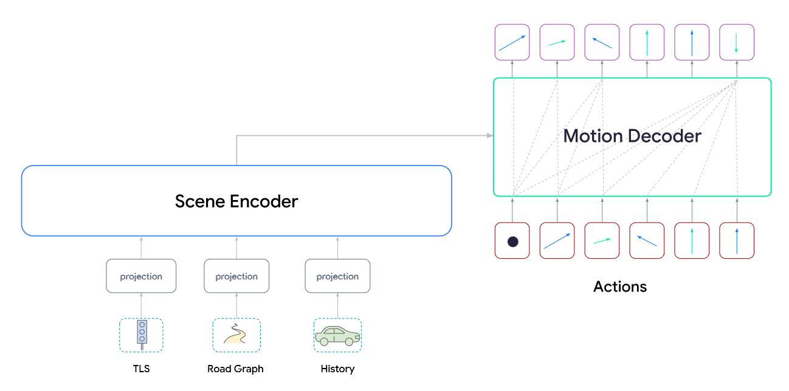
図1：モデルアーキテクチャは、エンコーダ／デコーダの Transformer ネットワークの組である。このモデルはマルチモーダルなシーンデータを入力とし、一連の運動トークンを自己回帰的に生成する。
図中ラベル：Scene Encoder＝シーンエンコーダ、Motion Decoder＝運動デコーダ、projection＝射影、TLS＝信号状態、Road Graph＝道路グラフ、History＝履歴、Actions＝行動
2.3.1 シーンエンコーダ
シーンエンコーダは、道路グラフ、信号状態、エージェントの軌跡履歴を含む複数の入力モダリティからの情報を処理する。ここでは、シーンエンコーダのバックボーンとして（Nayakanti et al., 2022）が提案した早期融合（early fusion）ネットワークの設計に従う。早期融合は、最小限の帰納バイアスですべてのモダリティをまとめて処理できる柔軟性のために好まれる。さらなる詳細は（Nayakanti et al., 2022）を参照されたい。シーンエンコーダは、自動運転車の姿勢によって定義される大域座標系ですべてのモダリティをエンコードする。これは、各モデル化対象エージェントについてそれぞれのローカル座標系でシーンエンコーディングを行っていた Wayformer（Nayakanti et al., 2022）や MotionLM（Seff et al., 2023）とは対照的である。
2.3.2 運動デコーダ
運動デコーダは、シーンエンコーダの出力に交差注意を行うことで、複数エージェントの運動トークン系列を生成する役割を担う。
離散運動トークン：連続的なウェイポイントからなる軌跡を、離散トークン \(a_t^m\) の系列に変換することにした。これにより、サンプリングを各時間ステップにおける純粋な分類タスクとして扱えるようになる。このように連続的な目標を離散化することは、本質的に連続的な他の領域、例えば音声生成（Yang et al., 2024）、メッシュ生成（Hao et al., 2024）、ロボットマニピュレーション（Kim et al., 2024）で有効であることが示されている。離散運動トークンはまた、ある程度の精度をモデルから自然に隠し、不完全な連続値予測から生じうる誤差の累積効果を緩和している可能性があると我々は考えている（Pertsch et al., 2025）。
平坦化したエージェント・時間の自己注意：エージェント方向と時間方向に分解した注意を別々のパスで行うことも可能であるが（Jia et al., 2024; Nayakanti et al., 2022; Ngiam et al., 2022）、ここでは簡単のため、エージェントと時間をまとめた自己注意を 1 パスで用いる。したがって、\(M\) 個のエージェントそれぞれについて長さ \(T\) の目標系列が与えられたとき、将来の情報漏洩を避けるための適切な因果マスクを用いて、\(MT\) 個の要素にわたって自己注意を行う。
この運動デコーダは MotionLM（Seff et al., 2023）のものにほぼ従うが、ここではすべての運動トークンが共有のシーンエンコーダトークンに交差注意を行う点が異なる。MotionLM では、シーンエンコーディングがエージェントごとに行われていたため、異なるエージェントのトークンはそれぞれ別のシーンエンコーダトークンに交差注意を行っていた。
3 データセット
データはスケーリングを可能にする重要な要素である。モデルは、データ量による制約を受けない場合にのみ、計算量と容量に応じてスケールする（Kaplan et al., 2020）。さらに、最近公開された研究では、固定の学習計算量に対してより多くのデータを用いること、すなわち固定容量のモデルを過学習（overtraining）させることで、さらなる改善が得られることがわかっている（De Vries, 2023）。加えて、データの量と質の両方を改善することで、基盤モデルの世代間で大きな改善が得られている。例えば、Llama2 から Llama3 ファミリーのモデル（Grattafiori et al., 2024）にかけて、フラッグシップの 405B パラメータモデルの学習に用いたトークン数は 1.8T から 14T トークンに増加した。これらの改善には、事前学習データのためのより入念な前処理・キュレーションパイプラインの開発や、事後学習データのためのより厳密な品質保証・フィルタリング手法の開発が含まれる。
我々は上記の傾向に従ってデータセットをキュレーションする。品質の尺度として、セーフティドライバーによるデモンストレーションからなるデータセットを用いる。本研究では半自律走行や完全自律走行の走行距離は一切用いていない。約 600 万件の固有の走行（run）をサンプリングし、その中から 30 秒の走行セグメントをサンプリングする。このサンプリングの一環として、データが有効で興味深く多様であることを保証するために、簡単なフィルタリングと重複除去を行う。これらのシナリオは、現実世界の多様な運転状況が豊富に混ざり合ったもので構成されている。例えば、高密度な都市（例：San Francisco、Phoenix、Los Angeles）の混雑した交差点の通過、工事区間や道路閉鎖への対応、緊急車両との相互作用とその周囲での安全な走行、高速道路のような制限速度の高い区域での走行、歩行者や自転車との複雑な譲り合い（you-go-I-go）の相互作用などである。データセットの興味深い統計の一部を表 1 にまとめる。
| データ指標 | 値 |
|---|---|
| 走行セグメント数 | 59.8 million |
| エージェント数 | 373 billion |
| 運転時間（時間） | 447 thousand |
| 走行距離（マイル） | 5.6 million |
| 学習事例数 | 541 million |
表1：スケーリング分析に用いたデータの統計。
第 2 節で説明したように、学習事例は運転履歴と将来予測からなる。本研究では、5 秒の履歴を用いて 11 秒先までの将来を予測する。長いホライズンの予測は運動予測タスクにとって困難であるが、エージェント間の複雑な動的・静的相互作用をモデル化することを可能にする。30 秒の走行セグメントから複数の学習事例を構成するために、重なりのあるスライディングウィンドウを用いる。現在は 1.5 秒のスライディングウィンドウを用いて、各走行セグメントから複数の事例を作成している。
4 スケーリング則
マルチエージェントの同時将来軌跡予測タスクにおける Transformer モデルのスケーリング挙動を調べる。モデルサイズ、データセットサイズ、学習計算量を体系的に変化させ、2 つの主要な問いに取り組む。1) 交差エントロピー損失は、言語やその他の領域で観察されているようなべき乗則のスケーリングに従うか？ 2) 固定の計算予算のもとで、モデルサイズの増加とデータセットサイズの増加の間の最適な配分はどうなるか？
Hoffmann et al.（2022）; Kaplan et al.（2020）に従い、学習損失を \(L(N, D)\) とパラメータ化する。ここで \(N\) は Transformer の総パラメータ数（埋め込み層を除く。付録 A を参照）、\(D\) は学習事例数である。我々のモデルは、モデル入力をシーン埋め込みに変換するエンコーダと、動的エージェントの運動行動トークンを自己回帰的に予測するデコーダを用いる。シーン埋め込みの次元と運動トークンは学習事例ごとに固定されているため、デコーダのみのモデルで一般的な学習トークン総数を用いる慣行とは異なり、学習事例数を用いて損失をパラメータ化する。
最適なモデルとデータのスケーリングを決定するため、Hoffmann et al.（2022）; Kaplan et al.（2020）に従い、固定の計算予算制約 \(\text{FLOPs}(N, D) = C\) のもとで損失関数を最小化することを目指す。
\[ N_{opt}, D_{opt} = \underset{N, D \text{ s.t. } FLOPs(N,D)=C}{\operatorname{argmin}} L(N, D) \tag{3} \]
対称なエンコーダ・デコーダモデルについて、\(N_{opt} \propto C^{0.63}\) および \(D_{opt} \propto C^{0.44}\) であることを観察する。これは、学習計算効率を最適にするためには、最適なモデルサイズを学習事例数の約 1.5 倍の速さで増やすべきであることを示している。次に分析の詳細を報告する。
4.1 最適なモデル規模とデータ規模のスケーリングの推定
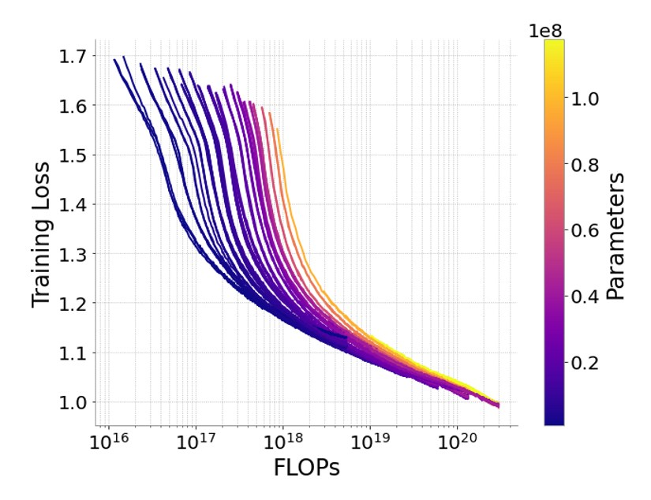
図2：全実験の学習交差エントロピー損失を計算量の関数として示す。損失は平滑化せずに示している。
図中ラベル：Training Loss＝学習損失、Parameters＝パラメータ数
エンコーダ・デコーダ型 Transformer モデルの交差エントロピー損失は、エンコーダとデコーダのパラメータ数によってパラメータ化できる（Ghorbani et al., 2021）。
\[ L(N_e, N_d, D) = E + \left(\frac{F}{N_e}\right)^{\alpha_e} \left(\frac{G}{N_d}\right)^{\alpha_d} + \frac{B}{D^\beta} \]
ここで \(N_e\) と \(N_d\) はそれぞれエンコーダとデコーダのパラメータ数である。\(\alpha_e\) と \(\alpha_d\) はエンコーダおよびデコーダに固有の指数である。\(F\)、\(G\)、\(B\) は正規化定数である。\(E\) はデータ分布のエントロピーとして解釈される（Henighan et al., 2020）。前述のとおり、\(D\) は学習事例数である。
エンコーダとデコーダの層数が対称なモデルを学習する。その結果、デコーダは埋め込み以外の総パラメータ数の \(\frac{4}{7}\) を保持する（パラメータ数の見積もりは付録 A を参照）。したがって、我々のエンコーダ・デコーダモデルは（Hoffmann et al., 2022）と同様にパラメータ化できる。
\[ L(N, D) = E + \frac{A}{N^\alpha} + \frac{B}{D^\beta} \tag{4} \]
これにより、デコーダのみのモデルと同様に、モデルの総パラメータ数の観点からモデルサイズを調べることができる。前節で説明したとおり、我々の場合の \(D\) は学習事例の総数を表す。\(A\) と \(B\) は正規化定数であり、データへの直接フィットによって経験的に求めることもできる（Hoffmann et al.（2022）のアプローチ 3 を参照）。
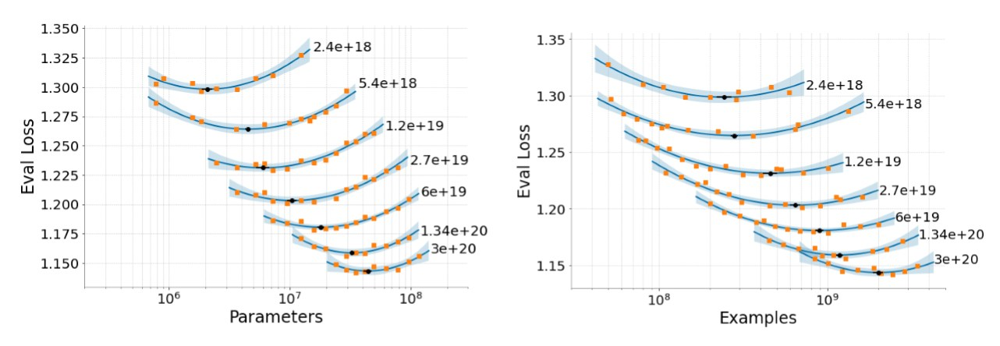
図3：埋め込み以外の総パラメータ数（左）および学習事例の総数（右）の関数としての最終損失を、iso-FLOP バンドごとにまとめたもの。線は放物線フィットを表し、誤差バンドはフィットパラメータの共分散から伝播させた 3 標準偏差を示す（付録 B を参照）。放物線の最小点は、固定計算予算における最適なモデルサイズとデータセットサイズを示す。
図中ラベル：Eval Loss＝評価損失、Parameters＝パラメータ数、Examples＝事例数。各曲線のラベル（2.4e+18 など）は計算予算（FLOPs）。
2 桁以上にわたる 7 つの計算予算において、900K から 118M パラメータまでのサイズの 84 個のモデルを学習する。異なるサイズのモデルを得るため、幅と深さの比を 8 または 16 に保ったまま、エンコーダとデコーダの層数を等しく増やすことでパラメータ数を変化させる。iso-FLOP バンドを得るため、モデルパラメータ数と学習ステップ数によって学習計算量を変化させる。バッチサイズは 512 事例に固定した。673 個のコンテキストトークンと 176 個の予測行動トークンにより、バッチは 434K トークンとなる。本研究全体を通して、固定バッチサイズで AdamW 最適化を用いる。コサイン学習率スケジュールを用い、ウォームアップは 3000 ステップ、ピーク値は \(2 \times 10^{-4}\)、総学習ステップ数に合わせて \(2 \times 10^{-5}\) まで減衰させる。学習は前述の交差エントロピー損失を用いて行う。図 2 は、全実験の学習損失曲線を学習予算の関数として示している。
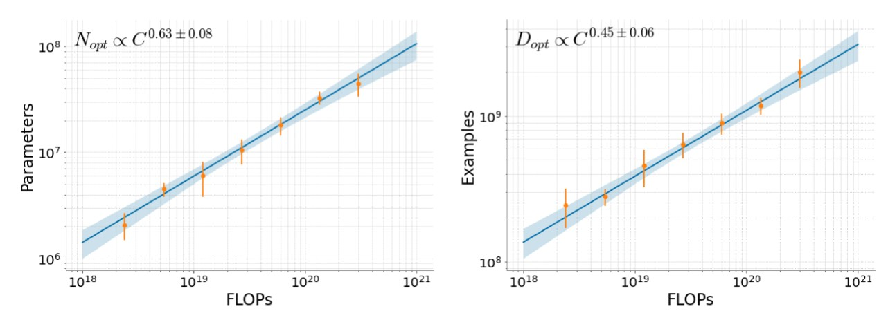
図4：総計算量の関数としての、学習計算最適なモデルパラメータ数（\(N_{opt}(C)\)）と学習事例数（\(D_{opt}(C)\)）。データ点は放物線フィットから得たもので、誤差棒は 3 標準偏差を表す。線は \(ax^b\) の形のべき乗則フィットに対応し、得られた指数の値を表示している。誤差バンドはフィットパラメータの共分散から伝播させた 3 標準偏差を示す（第 B 節を参照）。
図中ラベル：Parameters＝パラメータ数、Examples＝事例数
最適なモデルパラメータ数と学習事例数を求めるため、検証データセットでの最終損失を iso-FLOP バンドごとにまとめて図 3 にプロットする。各バンドを次のようにパラメータ化した放物線でフィットする。
\[ L_C(x) = a\left(\log x - \log x_C^{opt}\right)^2 + L_C^{opt} \]
ここで \(x\) はパラメータ数またはデータ点の数である。\(a\)、\(x_C^{opt}\)、\(L_C^{opt}\) はフィットパラメータである。後者の 2 つは、各計算予算 \(C\) について抽出する最適値である。\(N_{opt}\)、\(D_{opt}\)、\(L_{opt}\) の 3 標準偏差は、フィットパラメータの分散から直接報告する。図 4 は、放物線フィットから得た \(N_{opt}(C)\) と \(D_{opt}(C)\) を、\(ax^b\) の形のべき乗則フィットとともに示している。最終的に、指数 \(N_{opt} \propto C^{0.63 \pm 0.08}\) および \(D_{opt} \propto C^{0.44 \pm 0.06}\) を導出する（訳注：図 4 の表示では \(D_{opt} \propto C^{0.45 \pm 0.06}\) となっており、本文の値と食い違う）。
はじめにで述べたように、図 3（左）において、運動予測タスクに必要な最適モデルは、同じ計算予算の大規模言語モデル（例えば Hoffmann et al.（2022）を参照）よりパラメータ数が 50 倍小さいことを観察する。非言語領域における自己回帰モデルのスケーリングに関する他の研究でも同様の傾向が観察されており、特に Henighan et al.（2020）は異なるモダリティでのスケーリングを体系的に研究した。そこでは、異なる領域間で最適なモデルサイズに 1〜2 桁の差が見られる。言語は最も多くのパラメータを必要とするようであり、固定計算量のもとでより少ないデータで学習される。これがデータモダリティの性質なのか、それともデータの混合や分布の性質なのかを理解することで、我々のモデルのデータ効率を改善できる可能性がある。
4.2 交差エントロピー損失のスケーリング
iso-FLOP バンドから、固定計算予算に対する最適損失 \(L_{opt}(C)\) を得る。図 5 に示すように、モデルサイズ、データ、計算量を同時にスケールさせると、最適損失はべき乗則として改善する。これは、Kaplan et al.（2020）で自己回帰言語モデルについて研究され、Henighan et al.（2020）で幅広いモダリティにわたる自己回帰生成モデルについて成り立つことが示された経験的なべき乗則スケーリングの傾向が、自動運転車領域の運動予測タスクにも当てはまることを示している。しかし、データ点に曲率も観察され、還元不能項に近づいている可能性があることを示している。
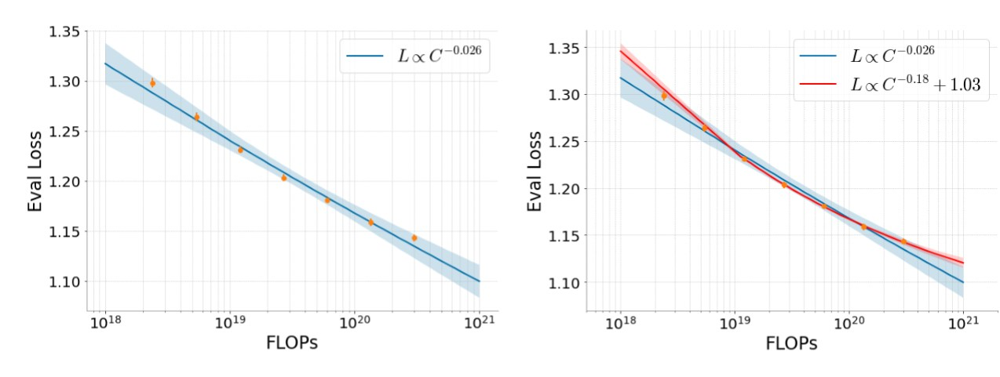
図5：総計算予算の関数としての学習計算最適な損失。\(L_{opt}\) の点は iso-FLOP バンドから抽出した。（左）実線は点へのべき乗則フィットを表す。（右）点をべき乗則と定数の和でフィットすると、定数を加えることでデータ点の曲率を捉えられることが観察される。誤差バンドはフィットパラメータの共分散から伝播させた 3 標準偏差を示す（第 B 節を参照）。
図中ラベル：Eval Loss＝評価損失
曲率に対処するため、べき乗則のフィットの形に定数を加える。
\[ L(C) = aC^b + L_\infty \]
ここで \(a\)、\(b\)、\(L_\infty\) はフィット定数である。図 2 の右パネル（訳注：内容から図 5 の右パネルの誤りと思われる）は、定数付きのフィットと純粋なべき乗則のフィットを比較している。定数を加えることで、データが大幅によく説明されることを観察する。これは、我々が問題の認識論的な還元不能損失、すなわち真のデータ分布のエントロピーに近づいているのか、それとも他の要因によるアーティファクトなのか、という疑問を提起する。これらの要因には、本研究のデータセットサイズが限られていること、複数回のデータパス（エポック）による学習（Muennighoff et al., 2023）、事例間の重複（Hernandez et al., 2022）が含まれうる。用いた運転シナリオの地理的データと複雑さの混合も、調査する価値のある領域である。また、知覚システムとのインタフェースにおける情報の損失（本研究では Waymo Open Motion Dataset（Ettinger et al., 2021）の構成に従い、限られた知覚特徴量のみを含めている）も、この還元不能性に寄与している可能性があると考えている。これらの問いに対する決定的な答えは今後の研究に委ねる。
我々のモデルはシーン内のすべての動的エージェントで学習される。エージェントの種類によって自由度、速度プロファイル、路上での挙動が異なり、その結果データ分布と予測可能性も異なる。したがって、これらのエージェント種別ごとの傾向を調べることは有用である。主なエージェント種別は、自車エージェント（手動運転の AV）、他の車両、歩行者、自転車である。図 6 の上段は、自動運転車（AV）の損失を他の車両の損失と比較している。両方の損失はべき乗則フィットに従うが、指数は異なる。スケールの違いは、知覚ノイズがなく完全に観測可能であるため AV の軌跡の方が予測しやすいという直感と一致する。指数はまた、AV の軌跡予測を改善する方が他の車両よりも容易であることを示しており、後者がより難しいタスクであることと整合する。図 6 は歩行者と自転車の予測についての損失と指数も示している。
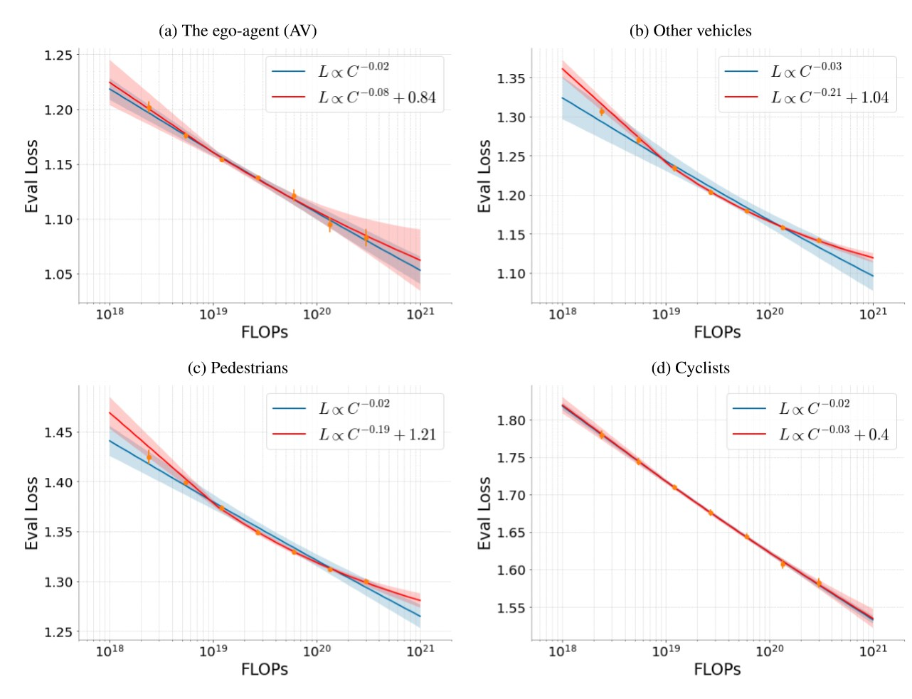
図6：シーン内の複数エージェントを同時に予測することで、すべてのエージェントの性能が向上する。傾き（指数）はタスクの難しさを示す。計算量をスケールさせたときの AV、車両、歩行者、自転車の評価損失を示す。
図中ラベル：(a) The ego-agent (AV)＝自車エージェント（AV）、(b) Other vehicles＝他の車両、(c) Pedestrians＝歩行者、(d) Cyclists＝自転車、Eval Loss＝評価損失
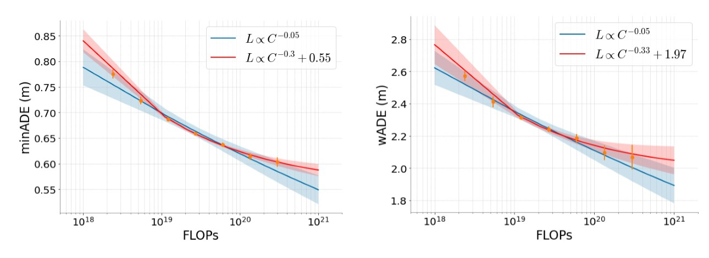
図7：計算最適なモデルのオープンループ距離指標 minADE と wADE を、総学習計算予算の関数として、定数あり・なしのべき乗則フィットとともに示す。総学習計算予算が増えるにつれて、オープンループでのモデル性能は向上する。議論の助けとしてべき乗則フィットを示すが、べき乗則の関係を確立するには、はるかに多くの桁にわたる計算量での研究が必要であることに注意されたい。
5 評価
5.1 オープンループ距離指標のスケーリング
本節では、スケールによってもたらされる交差エントロピー損失の改善が、一般的なオープンループ距離指標を用いて測ったモデルの運転技能の改善とどの程度相関するかを評価する。
ロールアウト集約（Rollout Aggregation）は、WOMD（Ettinger et al., 2021）のような標準的な運動予測ベンチマークで評価するために必要である。これらのベンチマークでは、予測軌跡を、エージェントごとに確率が付随した少数の異なる「モード」の集合として表すことがしばしば求められる。これらのモードは、異なる操作結果（譲る、追い越すなど）や、速度と経路の微妙な変動を捉えることができる。このコンパクトな表現を得るため、Varadarajan et al.（2021）および Seff et al.（2023）に従い、NMS と K-means クラスタリングを用いて 64 本の予測軌跡（ロールアウト）を 12 本の代表軌跡に集約する。この手法は、LLM でサンプルを集約する一般的な手法である多数決のソフト版と考えることができる。以下の指標は、これら 12 本のクラスタリングされた軌跡を評価する。
最小平均変位誤差（minADE）は、正解に最も近い軌跡のユークリッド距離誤差を計算する。
\[ minADE = \min_{k \in 1, \ldots, K} \frac{1}{T} \sum_{t=1}^{T} ||y_t^k - \hat{y}_t||_2 \tag{5} \]
ここで \(y^k\) はあるエージェントの \(k\) 番目の予測軌跡、\(\hat{y}\) はそのエージェントの正解軌跡、T は軌跡あたりの時間ステップ数である。最終的な指標は、評価データセット全体で予測された全エージェントについて平均する。
重み付き平均変位誤差（wADE）は、各軌跡クラスタの確率で重み付けした平均距離誤差を計算する。この指標は、異なる操作モードに対するモデルのカバレッジにより敏感である。
\[ wADE = \frac{1}{T} \sum_{k=1}^{K} p_k \sum_{t=1}^{T} ||y_t^k - \hat{y}_t||_2 \tag{6} \]
ここで \(K\) はエージェントあたりの予測（クラスタ）の総数、\(p_k\) はその予測の確率である。minADE と同様に、最終的な指標は評価データセット全体で予測された全エージェントについて平均する。
損失のスケーリング則の研究で特定された最適モデルを評価する代わりに、各指標について iso-FLOP の手順を繰り返し、それぞれのスケーリング傾向を得る。図 7 は minADE と wADE の両指標についてのべき乗則フィットを示している。損失におけるべき乗則的な改善が、これらのオープンループ指標にも反映されることを観察する。図にはべき乗則フィットを示しているが、べき乗則の関係を確立するには、はるかに多くの桁にわたる計算量と、より厳密な統計的方法論（Clauset et al., 2009）による研究が必要であることに注意されたい。ここでべき乗則フィットを用いるのは、交差エントロピーが単調に減少すれば、最も近い予測軌跡と正解との距離も最小化されることを示唆する最も単純な仮説としてである。実際には、放物線の形の方が観測データによくフィットするが、研究をより大きな計算量に拡張した場合には高い分散をもたらす可能性が高い。距離指標のスケーリングを支配する経験的な「法則」が存在するかどうかの確定は、より大きなデータと計算予算を用いた今後の研究に委ねる。
図 8 は、minADE 最適モデルのパラメータ数を交差エントロピー最適モデルと比較している。両者は概して誤差の範囲内で一致しているが、計算予算が小さいときには minADE 最適モデルの方が小さくなりうる。損失の研究と同様に、放物線の最小点における指標値を用いて、総計算予算の関数として定数あり・なしのべき乗則をフィットする。
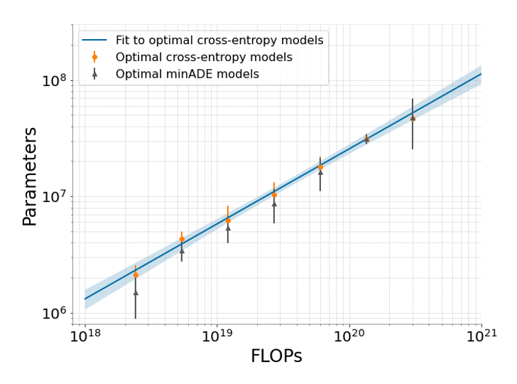
図8：評価交差エントロピーに対して最適化したモデルと minADE に対して最適化したモデルのパラメータ数の比較。計算予算が小さいとき、minADE 最適モデルは交差エントロピー最適モデルより小さくなる傾向があり、計算予算が大きいときにはより一致する。
図中ラベル：Fit to optimal cross-entropy models＝交差エントロピー最適モデルへのフィット、Optimal cross-entropy models＝交差エントロピー最適モデル、Optimal minADE models＝minADE 最適モデル、Parameters＝パラメータ数
図 9 は、サイズが大きくなるモデル間の定性的な違いを示している。これらの例は、モデルサイズが大きくなるにつれて多様性と精度が向上することを示している。さらなる可視化は付録 C を参照されたい。
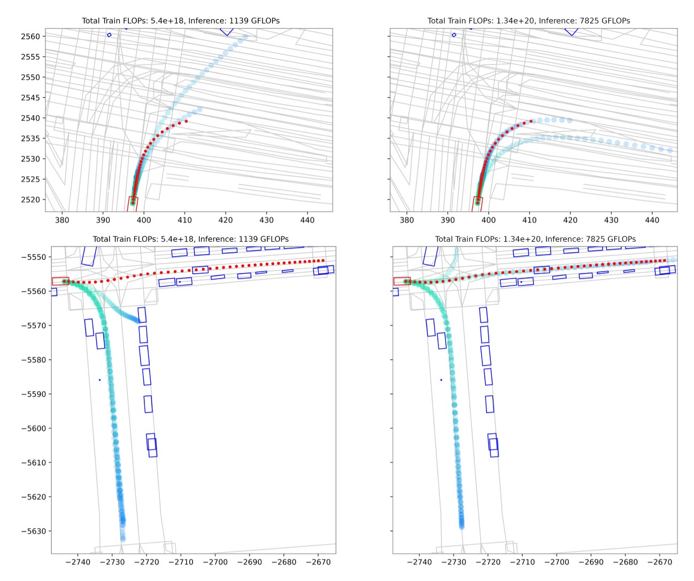
図9：サイズが大きくなるモデル間の定性的な違い。青／緑：予測軌跡、赤：正解軌跡。
図中ラベル：Total Train FLOPs: 5.4e+18, Inference: 1139 GFLOPs＝総学習 FLOPs：5.4e+18、推論：1139 GFLOPs（右列は総学習 FLOPs：1.34e+20、推論：7825 GFLOPs）
5.2 クローズドループのスケーリング
他の領域でも、モデルのスケールアップによるオープンループでのモデル性能の向上が示されているが、クローズドループ性能は比較的未開拓の研究領域である。多くの領域、そして特にロボティクスにおいて、オープンループ指標（例：交差エントロピーや専門家のデモンストレーションからの距離）の改善がクローズドループ性能の改善につながるかどうかは活発に議論されている。オープンループのスケーリング研究がクローズドループ性能につながることを示せれば、自動運転車や身体性 AI ロボティクス全般のような安全性が重要な応用にとって非常に有望である。
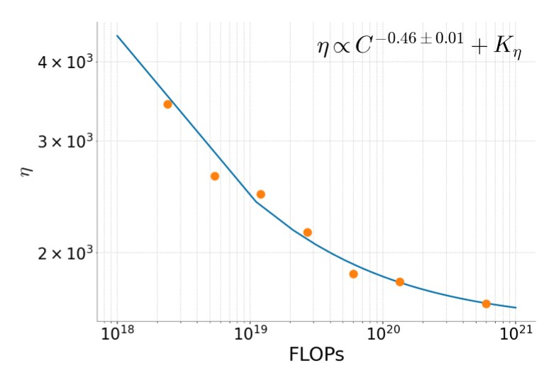
図10：失敗数 \(\eta\) で示されるクローズドループでの性能は、総事前学習計算予算 \(C\) の関数として向上する。損失やオープンループ指標で見られたのと同様のフィットが現れることがわかる。\(K_\eta\) は還元不能な定数である。
マルチエージェント運動予測モデルのスケーリング系列を、ルート条件付きの自動運転車（AV）方策に転移することで、クローズドループのスケーリング傾向を調べる。この転移を実現するため、計画ルート（planning route）を追加入力として、自動運転エージェントのみ（\(M\)=1）の計画を出力するようにモデルをファインチューニングする。この計画ルートは、自動運転車が目的地に到達するためにたどることが期待される経路の粗い定義であり、第 2 節で説明した道路グラフ入力と同様にポリラインとして表現する。すべてのモデルは、\(10^{15}\) FLOPs という同じ計算予算を用いて、計画ルートによる条件付けを行うようにファインチューニングした。このファインチューニングは、何桁も大きい事前学習と比べて非常に短いことに注意されたい。系列中で最小のモデルであっても、このファインチューニングに要する計算量はその事前学習より 3 桁少ない。
我々の設定では、クローズドループシミュレーション環境には、記録されたエージェントの再生と、模倣学習されたシミュレーションエージェントが混在しており、これらは AV の計画モデルと相互作用できる。シミュレーションされるシナリオは、10Hz の時間離散化で 30 秒の固定時間だけ実行される。シミュレーションの各ステップで、AV 方策から 1 つの行動を実行する必要がある。この行動を得るため、まず \(R\)=128 本の軌跡ロールアウトを計算し、次に下の式に従ってロールアウトの 1 つを計画 \(y^*\) として選択し、最後に計画の最初の 0.1 秒のみを行動としてシミュレータに与える。
\[ y^* = \arg\min_{y_i} \frac{1}{R} \sum_j \text{ADE}(y_i, y_j) - \alpha\left(\text{Progress}(y_i) - \frac{1}{R} \sum_j \text{Progress}(y_j)\right) \tag{7} \]
ここで \(i \in 1, \ldots, R\) および \(j \in 1, \ldots, R\) であり、\(\text{Progress}(y)\) は軌跡のルートに沿った進捗を表し、\(\alpha\) は進捗バイアスを較正するハイパーパラメータである（\(\alpha\) が大きいほど、より進む軌跡を強く好むことを示す）。
運転方策によって積極性（assertiveness）の点で運転スタイルが異なりうるため、進捗バイアスの較正は重要である。興味深さと多様性の観点で抽出した別のクローズドループ検証セット（前節までで用いた検証セットとは重複しない）を用いて、スケーリング則分析の各モデルについて、すべてのモデルがおおよそ同じ積極性を持つように \(\alpha\) を調整する。これは、方策が手動運転より大幅に多く進むシナリオの数と、方策が手動運転より大幅に少なくしか進まないシナリオの数の比が、モデル間で同程度になるようにすることで行う。
クローズドループ指標 \(\eta\) を失敗したシナリオの数として定義し、次の 3 つの条件のいずれかによって手動運転をうまく模倣できていない場合に、そのシナリオを失敗とみなす。(1) 方策が手動運転より大幅に多く進む、(2) 方策が手動運転より大幅に少なくしか進まない、(3) 方策が衝突を引き起こす。すべての方策が同程度の積極性を持つよう較正されていても、より優れたモデルは手動運転により近づくこと（すなわち上記 3 種類の事象がより少ないこと）で、より低い \(\eta\) を達成できることに注意されたい。
図 10 に、異なるサイズの較正済み方策をクローズドループ検証セットで評価したときのクローズドループの結果を示す。損失とオープンループ指標の両方におけるスケーリング則のフィットと同様に、クローズドループ性能も同様のスケーリング傾向に従い、事前学習計算量をスケールさせると失敗数 \(\eta\) がべき乗則として減少することがわかる。これは、オープンループ性能がクローズドループの良い代理指標となりうることを示唆している。
この結果を、特に模倣学習ベースの手法について、オープンループとクローズドループの性能の間に転移が見られないことを見出した先行研究 Bouzidi et al.（2025）; Casas et al.（2021）; Cheng et al.（2024）; Dauner et al.（2023b, 2024）; Li et al.（2024, 2025）と比較する価値がある。重要な違いの 1 つは、それらの研究がオープンループとクローズドループのベンチマークにわたって異なるモデルの性能を比較したことである。その設定では、モデルアーキテクチャ、モデルサイズ、目的関数など、異なる転移特性を生じうる交絡要因が多数存在する。対照的に、我々の研究ははるかに統制されている。最小限の帰納バイアスを持つ単純なアーキテクチャと単純な損失を用い、モデルを計算最適にスケールアップすることの効果のみを調べる。我々は、スケールがオープンループとクローズドループの両方で性能を向上させる重要な手段であることを特定できたことを喜ばしく思う。これは自動運転分野にとって重要な知見であると考える。最小限の帰納バイアスを持つ単純なアーキテクチャであることが、この結果を達成するための重要な要素であると我々は仮説を立てている。
6 推論のスケーリング則
前節までで述べたように、モデルの学習に用いる計算量をスケールさせることで、その能力は劇的に向上した。ここでは、軌跡分布をより正確に表現するために生成サンプル数を増やすことで、推論計算量をスケーリングのもう 1 つの軸として探る。LLM についても、Brown et al.（2024）; Snell et al.（2024）に示されるように同様のことが行われている。推論計算量とモデルサイズのトレードオフを探るため、モデルが生成するサンプル数を変化させながら、Ettinger et al.（2021）に記載の Waymo Open Motion Dataset（WOMD）Motion Prediction Challenge で定義された指標を計算する。第 5 節で定義した minADE 指標に加えて、次の 3 つの指標を用いる。
最小最終変位誤差（minFDE）は、ステップ T でのみ計算した minADE と等価である。
\[ minFDE = \min_k ||y_T^k - \hat{y}_T||_2 \tag{8} \]
ミス率（Miss Rate）は、許容範囲内にある予測の割合を計算する（訳注：定義上は許容範囲外となる「ミス」の割合である）。ミスとは、あるエージェントについての \(K\) 個の個々の予測のいずれも、所与の時刻 \(T\) において正解軌跡から所定の横方向・縦方向のしきい値内にない状態として定義される。しきい値は Ettinger et al.（2021）に従い、時間と速度の両方に応じてスケールされる。ミス率は、ミスの総数を予測したエージェントの総数で割って計算される。
mAP は、挙動ごとにバケット分けした予測の平均適合率の平均（mean average precision）を計算する。Ettinger et al.（2021）に従い、正解軌跡を、直進、直進左寄り、直進右寄り、左折、右折、左 U ターン、右 U ターン、停止を含む挙動バケットに分類する。上で定義したのと同じミスの定義を用いて、すべてのミスには偽陽性、ミスでないものには真陽性を割り当て、バケットごとに保存する。各バケットについて P/R 曲線から平均適合率の値を計算する。最終的な指標は、すべてのバケットにわたる平均適合率の平均である。
各モデルからサンプリングする軌跡の数は、8 から 1024 まで 2 倍ずつ増やして変化させた。すべての指標は、第 5.1 節で述べたのと同じ集約アルゴリズムを用いて出力軌跡に非最大値抑制（NMS）クラスタリングを適用し、\(K = 6\) として計算した。
分析とプロットを簡単にするため、容量が段階的に大きい 3 つのモデルを選んでこの分析を行う。図 11 と図 12 は、これらのモデルについて計算した指標を示している。事後学習を一切行わない事前学習済みモデルを用いる。mAP 指標で測られるカバレッジが、推論計算量が 3 桁にわたって増加するにつれて向上することを観察する。加えて、精度を測る minFDE／minADE のような距離ベースの指標も、推論計算量の増加に伴ってスケールし続ける。しかし、個々のモデルにおける改善には上限があり、交差点を超えて推論計算量を増やしても収穫は逓減する。この時点で、より大きな容量を持つモデルの方が推論計算最適になる。したがって、図 11 と図 12 に示すように、各モデルには推論 FLOPs の領域において自らが最適モデルとなる固有の範囲がある。
図 13 は、同じモデルから得た 16 サンプルと 1024 サンプルの集合をそれぞれクラスタリングした予測の定性的な違いを示している。各集合は、実験で述べた方法を用いて 6 本の軌跡に削減した。これらの例は、サンプル数が増えるにつれて多様性と精度が向上することを示している。さらなる可視化は付録 D を参照されたい。
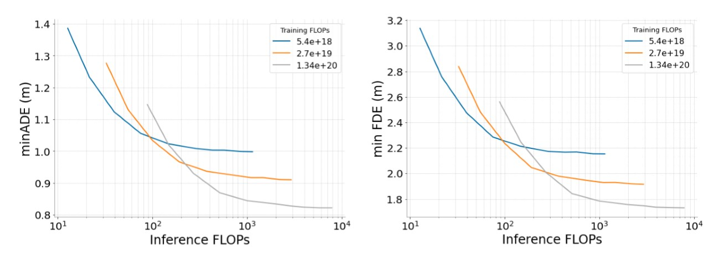
図11：容量が段階的に大きい 3 つのモデルの距離指標。各モデルには、それが最適となる推論計算量の範囲がある。各モデルには交差点があり、そこで推論 FLOPs を増やすと、より大きなモデルの方が最適になる。
図中ラベル：Inference FLOPs＝推論 FLOPs、Training FLOPs＝学習 FLOPs、min FDE＝minFDE
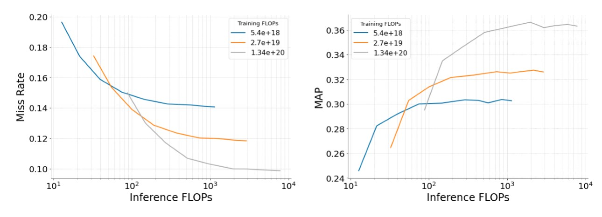
図12：容量が段階的に大きい 3 つのモデルのカバレッジ指標。距離指標と同様に、各モデルには、それが最適となる推論計算量の範囲がある。
図中ラベル：Miss Rate＝ミス率、MAP＝mAP、Inference FLOPs＝推論 FLOPs、Training FLOPs＝学習 FLOPs
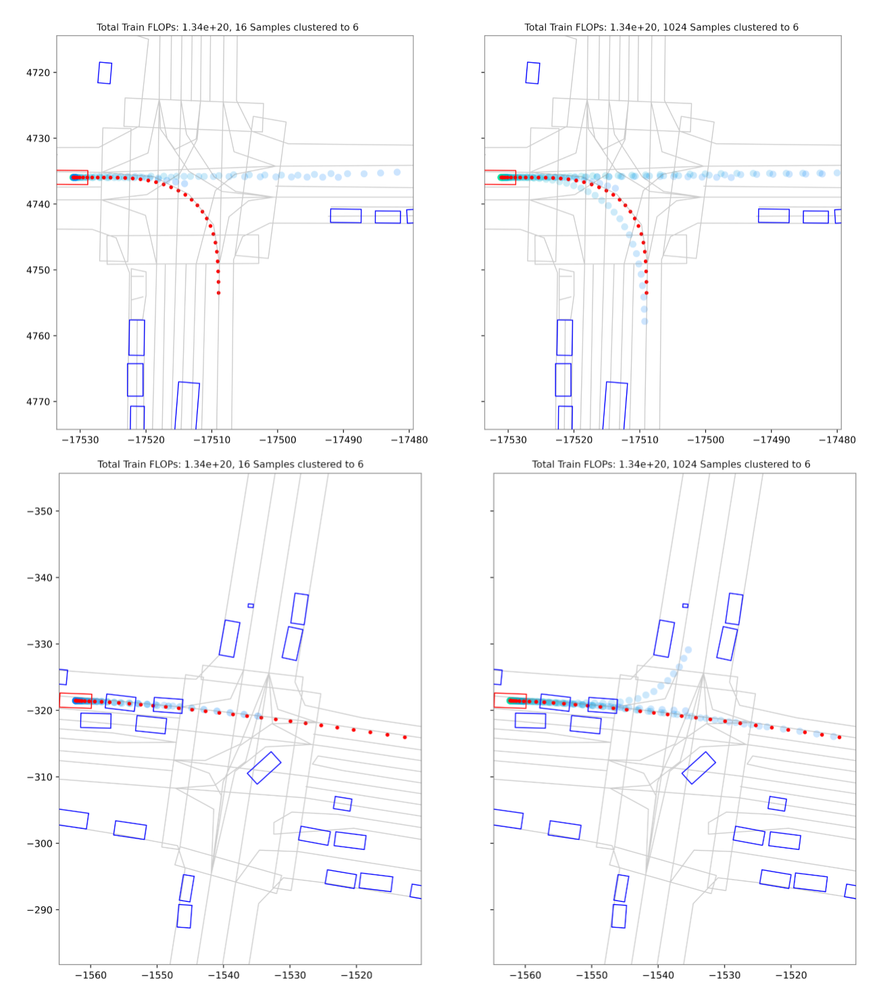
図13：16 本と 1024 本のロールアウトからクラスタリングした軌跡の定性的な違い。青／緑：予測軌跡、赤：正解軌跡。
図中ラベル：Total Train FLOPs: 1.34e+20, 16 Samples clustered to 6＝総学習 FLOPs：1.34e+20、16 サンプルを 6 本にクラスタリング（右列は 1024 サンプルを 6 本にクラスタリング）
7 エージェント間の技能転移
ロボティクス向け機械学習を進展させるうえでの主な課題の 1 つは、現代の大容量深層学習モデルの学習に必要なデータ量である。データ収集は、プラットフォーム、ロジスティクス、時間を要する低速で人手に依存したプロセスであり、そのすべてがスケーラビリティに大きな課題をもたらす。この課題に対処するため、ロボットの行動ラベルのない受動的なロボット動画データでの事前学習 Ye et al.（2024）や、さらにはインターネットから収集した動画データセットでの事前学習 Cheang et al.（2024）; Wu et al.（2023）に焦点を当てた研究が増えている。同様に、自動運転車（AV）の応用においても、観測されたエージェントの動画を活用して AV プランナーモデルを学習できるかどうかを明らかにすることは、大規模なデータ収集作業なしに、より大きな基盤モデルを学習し、新しい地理的領域への汎化性を向上させるのに役立つ可能性がある。この簡潔な研究では、2 つの問いに光を当てることを目指す。1) 他のエージェントの観測軌跡での学習は AV エージェントに転移するか？ 2) もしそうなら、人間がデモンストレーションした 1 マイルは、観測された 1 マイルと比べてどれだけの価値があるか？
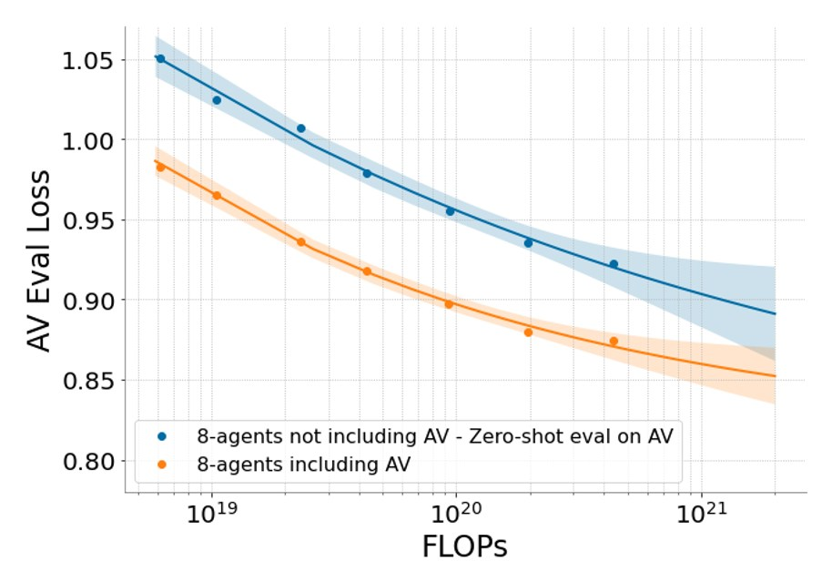
図14：AV を除く 8 エージェント予測タスクで学習し、AV を含む 8 エージェントでゼロショット評価した計算最適モデルを、AV を含めて学習したモデルと、学習計算量の関数として比較したもの。他のエージェントの軌跡での学習は、AV の分布にゼロショットで転移する。
図中ラベル：AV Eval Loss＝AV 評価損失、8-agents not including AV - Zero-shot eval on AV＝AV を含まない 8 エージェント（AV でゼロショット評価）、8-agents including AV＝AV を含む 8 エージェント
これらの問いに答えるため、主研究の計算最適モデルを、AV エージェントを除いた 8 エージェントの同時予測で学習した。次に、これらのモデルを AV エージェントを含む 8 エージェントでゼロショット評価した。これらのモデルの AV 交差エントロピー損失を、AV 軌跡を用いて学習したモデルと比較した1。図 14 は、これらの損失を学習計算 FLOPs の関数として比較している。AV なしで学習したモデルが AV エージェントに対して妥当なゼロショット汎化を示し、学習計算量を増やすにつれて同様のスケーリング傾向に従うことは明らかである。
脚注1：これらのモデルは主要なスケーリング則の実験より後の時期に学習され、異なる行動空間の設定を用いていることに注意されたい。そのため、図 6 と比べて損失の絶対値が異なる。
データの等価性の問いに答えるため、まず図 15（左）に示すように、損失の結果を学習データの走行マイル数の関数としてフィットした。次に、これらのフィットを用いて iso-loss 分析を行い、デモンストレーションされたマイルと同じ損失を達成するのに必要な観測マイル数を求めた。外挿誤差を減らすため、比較は 2 つの曲線に共通する損失範囲に限定した。この傾向は、観測された 10 マイルがデモンストレーションされた 2〜3 マイルに相当することを示している。
この分析に対する重要な注意点の 1 つは、すべての学習データが同じ AV エージェントのプラットフォームで取得されたため、事例が概して AV 自車エージェントと相関していることである。純粋に受動的に観測された運転マイルや、異なる運転プラットフォームから集めたデータでこの研究を行うことは、興味深い今後の方向性であろう。この相関に関する注意点はあるものの、ロボティクス応用全般におけるデータの課題にどう対処するかの議論に貢献するため、また AV 基盤モデルの新しい地理的領域や運転行動への汎化性を向上させるための可能な方向性として、この分析を含めた。
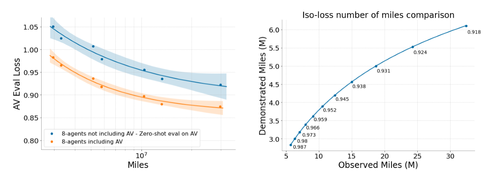
図15：AV を除く 8 エージェント予測タスクで学習し、AV を含む 8 エージェントでゼロショット評価した計算最適モデルを、AV を含めて学習したモデルと比較したもの。（左）学習データの走行マイル数の関数としての AV 交差エントロピー損失。（右）iso-loss 比較：デモンストレーションされたマイル（学習に AV 軌跡を含む）と同じ AV エージェント損失を達成するのに必要な観測マイル数（学習で AV 軌跡を除く）。
図中ラベル：AV Eval Loss＝AV 評価損失、Miles＝マイル、Iso-loss number of miles comparison＝同一損失となるマイル数の比較、Demonstrated Miles (M)＝デモンストレーションされたマイル（百万）、Observed Miles (M)＝観測されたマイル（百万）。点の数値は損失値。
8 関連研究
ニューラルスケーリング則。ニューラルスケーリング則は深層学習における重要な研究領域となっており、次のような極めて重要な問いに取り組んでいる。有限の計算予算が与えられたとき、最適なモデルサイズとデータセットサイズのスケーリング戦略は何か？ また、モデルのスケーリングへの投資は、具体的なモデルや製品の改善にどのようにつながるか？ （Hestness et al., 2017）による初期の研究は、機械翻訳、言語モデリング、画像処理、音声認識の 4 つの領域において、さまざまなモデルアーキテクチャにわたり、学習データセットサイズの増加に伴ってモデルの精度がべき乗則として向上することを示した。言語モデリングのための自己回帰 Transformer デコーダのスケーリングに関する Kaplan et al.（2020）の体系的研究は、より多くのデータと計算量で学習された、より多くのパラメータを持つ大きなモデルが、一貫して予測可能な形でより良い性能を示すことを明らかにした。彼らはまた、学習計算量の関数として最適なモデルサイズとデータセットサイズを決定する方法論も開発した。Henighan et al.（2020）は、画像モデリング、動画モデリング、マルチモーダルな画像からテキストへのモデル、数学的問題解決という 4 つの生成モデリング領域で交差エントロピー損失のスケーリングを調べた。いずれの場合も、モデル、データ、計算量の同時スケーリングが、べき乗則と定数の和の形のスケーリング則に従うことを示した。交差エントロピー損失を KL ダイバージェンスと学習データの自己エントロピーの和とみなす情報理論的解釈を利用して、経験的スケーリング則が両方の項を予測できることを示唆した。Hernandez et al.（2021）はこれらの知見を転移学習に拡張し、タスク間の汎化のための事前学習のスケーリングの重要性を強調するとともに、転移もパラメータ、データ、計算量の観点から予測可能な形でスケールすることを示した。エンコーダ・デコーダのスケーリング則は（Ghorbani et al., 2021）で研究されている。さらに、Chinchilla 研究として知られる Hoffmann et al.（2022）は、固定の学習ステップ数で最良の性能を得るためにオプティマイザのスケジューラを最適化する方法論を導入した。彼らはその後、3 つの異なるアプローチを用いて学習計算最適なモデルスケーリングを調べた。彼らの重要な貢献の 1 つは IsoFLOP 分析手法の開発であり、本研究ではこれを採用している。
AV におけるスケーリング則。いくつかの研究が、挙動予測と計画に重点を置いて、自動運転車（AV）モデルのスケーリング則を調べている。例えば、（Hu et al., 2023）は、エンドツーエンドの条件付き世界モデリングのための拡散動画デコーダを組み込んだマルチモーダルな Vision-Language-Action モデルのスケーリングを探った。4,700 時間の運転データを用いて計算量 4 桁にわたるスケーリングを調べ、モデルと計算量の規模の増加に伴って動画生成性能が向上することを示した。対照的に、我々の研究は挙動予測タスクに焦点を当て、約 2 桁大きい運転データセットを活用する。さらに、学習計算量に対する最適なモデルサイズとデータセットサイズを体系的に調べる。Yao et al.（2025）は、非公開の学習データセットサイズと \(10^{17}\) FLOPs 未満の計算予算を用いて、Transformer ベースの挙動予測モデルと知覚モデルのスケーリングを個別に分析した。スケールの増加に伴うオープンループ指標の改善を観察したものの、最大のモデルで過学習が生じたことを報告し、ある閾値を超えるスケーリングの利点に対して注意を促した。Zheng et al.（2024）は、オンライン地図予測、4D 占有予測、静的検出、運動予測、計画を同時に行うよう設計されたエンドツーエンドモデル群について、データのスケーリング則を調べた。モデルの性能と汎化を評価するため、23 の多様なシナリオからなる合計 30,000 時間、400 万件のデモンストレーションのデータセットを構築した。オープンループとクローズドループの両方の評価を通じて、モデル性能と学習データ量の間のべき乗則の関係を示した。加えて、ロングテールのシナリオの比率を増やすことで大きな性能向上が得られることを強調した。Huang et al.（2024）は、我々のモデルおよびタスクと密接に対応する Transformer モデルのスケーリングを調べた。計算上の制約から、最適なモデルとデータのスケーリングを \(10^{15}\) および \(3 \times 10^{17}\) FLOPs に限定した。スケールの増加に伴う性能指標の改善を報告し、より大きなモデルについて頑健なクローズドループ性能を定性的に示した。
9 考察
本レポートでは、自動運転領域における同時予測タスクのためのエンコーダ・デコーダ型 Transformer モデルのスケーリング則の研究を示した。LLM の場合と同様に、モデルとデータセットのサイズを同時にスケールさせながら学習計算量をスケールさせると、交差エントロピー損失の改善がべき乗則に従うことを観察した。しかし LLM の場合とは異なり、このタスクの最適モデルは比較的小さい傾向がある一方で、学習にははるかに多くのデータを必要とする。この知見が類似のロボット計画タスクでも成り立つならば、データ収集と学習すべきモデルのサイズに重要な示唆を与えると考える。さらに、これらのモデルはサイズが小さいためにレイテンシが低く、オンボードシステムの性能向上が学習データセットサイズと計算量のスケーリングによって直接もたらされうることを意味する。
運転データは高度に多峰的であるが、学習データの分布は直進のようなあまり興味深くないモードに支配されていることがわかっている。また、言語の場合とは異なり、運転は直感的に知識の構築と検索をあまり必要とせず、より多くの空間的推論を必要とするため、この計画タスクの最適モデルはフィードフォワードネットワーク層のパラメータが比較的少なくなる可能性が高いという仮説も立てている。これらの観察のうちどれが最適モデルの比較的小さなサイズを説明しうるかを理解することは、興味深い研究の方向性である。
もう 1 つの興味深い方向性は、どのような変更によってこれらのモデルがこのタスクでよりデータ効率的になるかを調べることである。例えば、より難しい運転シナリオをサンプリングすれば、事例あたりにより多くの計算量を費やす必要があり、モデルがより少ないデータからより多くを学習するのに役立つだろうか？ 視覚トークンのようなより豊かな知覚入力を用いたり、エンドツーエンドのパラダイムに移行したりすることは、これらのモデルのデータ効率にどのように影響するだろうか？ モデル出力の側では、世界モデリングの複雑さ、例えば行動空間、モデル化対象エージェントの数、モデル出力のモダリティを増やすことで、モデルは各事例からより多くを学習するようになるだろうか？ これらはいずれも興味深い問いであり、特に言語以外の領域におけるこれらの経験的スケーリング則の性質についてより多くを知るにつれて、答えが得られることを期待している。
交差エントロピー損失の改善がオープンループおよびクローズドループ指標の改善につながることを示したが、現在の計算予算は、それらも学習計算量とべき乗則の関係に従うかどうかを確立するのに十分な桁数にわたっていない。今後の研究によって、予測的な関係が存在するならばそれが得られることを期待する。
交差エントロピーとすべての指標が、べき乗則と定数の和によってよりよく説明されることを観察した。これが問題の認識論的な還元不能損失、すなわち真のデータ分布のエントロピーを測っているのか、それとも他の要因によるアーティファクトなのかを理解することは、今後の研究にとって重要である。我々の主な仮説は、限られたデータセットサイズ、重なりのある事例による特徴量の系統的な重複、そして用いたシーンレベルの基本的な知覚特徴量の集合が、観察された定数の主な要因であるというものである。
推論時計算量のスケーリングによるモデルの改善は、特に興味深い結果である。第一に、サンプリングを増やすことのみによるモデルの改善には収穫逓減点があり、その時点ではより大きく高価なモデルからサンプリングする方が良いことがわかる。これは、より大きな計算予算とデータセットでより大きなモデルを学習する必要性を裏付けている。第二に、この改善自体が、より難しいシナリオを解くために推論時計算量をどのように選ぶかについて、より適応的な戦略を求めている。LLM についてはこれを行う方法が最近提案されている Snell et al.（2024）。同様に、ロボティクスにおける計画タスクでは、シナリオによって複雑さが大きく異なり、オンボードシステムはそれらを解くのに必要な計算量を適応させることができるだろう。
推論時計算最適なモデルをどのように学習するかという問題もある De Vries（2023）。これらは Chinchilla 最適点を超えて学習された小さなモデルであり、オンボード応用にとってより安価になる。対応する最適なモデルサイズと学習データセットサイズを見つけるために直接最適化する提案がある Sardana and Frankle（2023）。将来的には、プロンプトあたりのサンプル数を最適化のもう 1 つのパラメータとして加えることも検討できる。もう 1 つの刺激的な方向性は、異なるサイズのモデル群を学習する代わりに、推論時に使用するモデル容量を柔軟に選択できる入れ子構造のアーキテクチャを学習することである Kudugunta et al.（2023）。そのようなアーキテクチャを、より適応的なテスト時サンプリング手法とどのように組み合わせるかを見るのは非常に興味深いだろう。
最後に、ロボットマニピュレーションの分野にとって重要な問いは、より大きな基盤モデルの事前学習を可能にする、スケーラブルなデータ収集方法論を考案することである。運転の場合、そのような情報源の 1 つは受動的に観測された運転ログでありうるという仮説を立てている。我々のデータはすべて我々のプラットフォームから収集されたものであり真に受動的ではないが、それでも他のエージェントの観測軌跡での学習が AV 自車エージェントにゼロショットで転移するかどうかを調べる簡潔な研究を行った。この研究がこの領域でのさらなる研究を促す一助となることを願う。
これはロボティクスにとって非常に豊かな研究領域であると考えており、自然言語以外のモダリティやタスクに対するモデルのスケーリング則についてさらに多くを学ぶことを楽しみにしている。
10 謝辞
本研究は大規模な共同作業の成果であり、重要な支援を提供してくれた多くの同僚に心から感謝の意を表したい。彼らの貴重な貢献は、データキュレーション、インフラ支援、実験的検証、洞察に富むフィードバックを含む、プロジェクトのあらゆる段階に及んだ。
特に、Brian Axelrod、Anand Bhaskar、Aaron Effron、Aditya Gupta、Wenlin Hu、Gus Katsiapis、Lingyun Li、Maher Mneimneh、Cheol Park、Rushina Shah、Avikalp Srinivasta、Thomas Tian、Daniel Wang に感謝する。
参考文献
参考文献は原文のまま掲載した。
- M.-K. Bouzidi, C. Schlauch, N. Scheuerer, Y. Yao, N. Klein, D. Göhring, and J. Reichardt. Closing the loop: Motion prediction models beyond open-loop benchmarks. arXiv preprint arXiv:2505.05638, 2025.
- B. Brown, J. Juravsky, R. Ehrlich, R. Clark, Q. V. Le, C. Ré, and A. Mirhoseini. Large language monkeys: Scaling inference compute with repeated sampling, 2024. URL https://arxiv.org/abs/2407.21787.
- T. B. Brown, B. Mann, N. Ryder, M. Subbiah, J. Kaplan, P. Dhariwal, A. Neelakantan, P. Shyam, G. Sastry, A. Askell, S. Agarwal, A. Herbert-Voss, G. Krueger, T. Henighan, R. Child, A. Ramesh, D. M. Ziegler, J. Wu, C. Winter, C. Hesse, M. Chen, E. Sigler, M. Litwin, S. Gray, B. Chess, J. Clark, C. Berner, S. McCandlish, A. Radford, I. Sutskever, and D. Amodei. Language models are few-shot learners, 2020. URL https://arxiv.org/abs/2005.14165.
- S. Casas, A. Sadat, and R. Urtasun. Mp3: A unified model to map, perceive, predict and plan. In Proceedings of the IEEE/CVF Conference on Computer Vision and Pattern Recognition, pages 14403–14412, 2021.
- C.-L. Cheang, G. Chen, Y. Jing, T. Kong, H. Li, Y. Li, Y. Liu, H. Wu, J. Xu, Y. Yang, H. Zhang, and M. Zhu. Gr-2: A generative video-language-action model with web-scale knowledge for robot manipulation, 2024. URL https://arxiv.org/abs/2410.06158.
- J. Cheng, Y. Chen, X. Mei, B. Yang, B. Li, and M. Liu. Rethinking imitation-based planners for autonomous driving. In 2024 IEEE International Conference on Robotics and Automation (ICRA), pages 14123–14130. IEEE, 2024.
- A. Clauset, C. R. Shalizi, and M. E. J. Newman. Power-law distributions in empirical data. SIAM Review, 51(4): 661–703, 2009. doi: 10.1137/070710111. URL https://doi.org/10.1137/070710111.
- D. Dauner, M. Hallgarten, A. Geiger, and K. Chitta. Parting with misconceptions about learning-based vehicle motion planning, 2023a. URL https://arxiv.org/abs/2306.07962.
- D. Dauner, M. Hallgarten, A. Geiger, and K. Chitta. Parting with misconceptions about learning-based vehicle motion planning. In Conference on Robot Learning, pages 1268–1281. PMLR, 2023b.
- D. Dauner, M. Hallgarten, T. Li, X. Weng, Z. Huang, Z. Yang, H. Li, I. Gilitschenski, B. Ivanovic, M. Pavone, et al. Navsim: Data-driven non-reactive autonomous vehicle simulation and benchmarking. Advances in Neural Information Processing Systems, 37:28706–28719, 2024.
- H. De Vries. Go smol or go home, 2023. URL https://www.harmdevries.com/post/model-size-vs-compute-overhead/.
- S. Ettinger, S. Cheng, B. Caine, C. Liu, H. Zhao, S. Pradhan, Y. Chai, B. Sapp, C. R. Qi, Y. Zhou, Z. Yang, A. Chouard, P. Sun, J. Ngiam, V. Vasudevan, A. McCauley, J. Shlens, and D. Anguelov. Large scale interactive motion forecasting for autonomous driving: The waymo open motion dataset. In Proceedings of the IEEE/CVF International Conference on Computer Vision (ICCV), pages 9710–9719, October 2021.
- B. Ghorbani, O. Firat, M. Freitag, A. Bapna, M. Krikun, X. Garcia, C. Chelba, and C. Cherry. Scaling laws for neural machine translation. arXiv preprint arXiv:2109.07740, 2021.
- R. Girgis, F. Golemo, F. Codevilla, M. Weiss, J. A. D'Souza, S. E. Kahou, F. Heide, and C. Pal. Latent variable sequential set transformers for joint multi-agent motion prediction, 2022. URL https://arxiv.org/abs/2104.00563.
- A. Grattafiori, A. Dubey, A. Jauhri, A. Pandey, A. Kadian, A. Al-Dahle, A. Letman, A. Mathur, A. Schelten, A. Vaughan, A. Yang, A. Fan, A. Goyal, A. Hartshorn, A. Yang, A. Mitra, A. Sravankumar, A. Korenev, A. Hinsvark, A. Rao, A. Zhang, A. Rodriguez, A. Gregerson, A. Spataru, B. Roziere, B. Biron, B. Tang, B. Chern, C. Caucheteux, C. Nayak, C. Bi, C. Marra, C. McConnell, C. Keller, C. Touret, C. Wu, C. Wong, C. C. Ferrer, C. Nikolaidis, D. Allonsius, D. Song, D. Pintz, D. Livshits, D. Wyatt, D. Esiobu, D. Choudhary, D. Mahajan, D. Garcia-Olano, D. Perino, D. Hupkes, E. Lakomkin, E. AlBadawy, E. Lobanova, E. Dinan, E. M. Smith, F. Radenovic, F. Guzmán, F. Zhang, G. Synnaeve, G. Lee, G. L. Anderson, G. Thattai, G. Nail, G. Mialon, G. Pang, G. Cucurell, H. Nguyen, H. Korevaar, H. Xu, H. Touvron, I. Zarov, I. A. Ibarra, I. Kloumann, I. Misra, I. Evtimov, J. Zhang, J. Copet, J. Lee, J. Geffert, J. Vranes, J. Park, J. Mahadeokar, J. Shah, J. van der Linde, J. Billock, J. Hong, J. Lee, J. Fu, J. Chi, J. Huang, J. Liu, J. Wang, J. Yu, J. Bitton, J. Spisak, J. Park, J. Rocca, J. Johnstun, J. Saxe, J. Jia, K. V. Alwala, K. Prasad, K. Upasani, K. Plawiak, K. Li, K. Heafield, K. Stone, K. El-Arini, K. Iyer, K. Malik, K. Chiu, K. Bhalla, K. Lakhotia, L. Rantala-Yeary, L. van der Maaten, L. Chen, L. Tan, L. Jenkins, L. Martin, L. Madaan, L. Malo, L. Blecher, L. Landzaat, L. de Oliveira, M. Muzzi, M. Pasupuleti, M. Singh, M. Paluri, M. Kardas, M. Tsimpoukelli, M. Oldham, M. Rita, M. Pavlova, M. Kambadur, M. Lewis, M. Si, M. K. Singh, M. Hassan, N. Goyal, N. Torabi, N. Bashlykov, N. Bogoychev, N. Chatterji, N. Zhang, O. Duchenne, O. Çelebi, P. Alrassy, P. Zhang, P. Li, P. Vasic, P. Weng, P. Bhargava, P. Dubal, P. Krishnan, P. S. Koura, P. Xu, Q. He, Q. Dong, R. Srinivasan, R. Ganapathy, R. Calderer, R. S. Cabral, R. Stojnic, R. Raileanu, R. Maheswari, R. Girdhar, R. Patel, R. Sauvestre, R. Polidoro, R. Sumbaly, R. Taylor, R. Silva, R. Hou, R. Wang, S. Hosseini, S. Chennabasappa, S. Singh, S. Bell, S. S. Kim, S. Edunov, S. Nie, S. Narang, S. Raparthy, S. Shen, S. Wan, S. Bhosale, S. Zhang, S. Vandenhende, S. Batra, S. Whitman, S. Sootla, S. Collot, S. Gururangan, S. Borodinsky, T. Herman, T. Fowler, T. Sheasha, T. Georgiou, T. Scialom, T. Speckbacher, T. Mihaylov, T. Xiao, U. Karn, V. Goswami, V. Gupta, V. Ramanathan, V. Kerkez, V. Gonguet, V. Do, V. Vogeti, V. Albiero, V. Petrovic, W. Chu, W. Xiong, W. Fu, W. Meers, X. Martinet, X. Wang, X. Wang, X. E. Tan, X. Xia, X. Xie, X. Jia, X. Wang, Y. Goldschlag, Y. Gaur, Y. Babaei, Y. Wen, Y. Song, Y. Zhang, Y. Li, Y. Mao, Z. D. Coudert, Z. Yan, Z. Chen, Z. Papakipos, A. Singh, A. Srivastava, A. Jain, A. Kelsey, A. Shajnfeld, A. Gangidi, A. Victoria, A. Goldstand, A. Menon, A. Sharma, A. Boesenberg, A. Baevski, A. Feinstein, A. Kallet, A. Sangani, A. Teo, A. Yunus, A. Lupu, A. Alvarado, A. Caples, A. Gu, A. Ho, A. Poulton, A. Ryan, A. Ramchandani, A. Dong, A. Franco, A. Goyal, A. Saraf, A. Chowdhury, A. Gabriel, A. Bharambe, A. Eisenman, A. Yazdan, B. James, B. Maurer, B. Leonhardi, B. Huang, B. Loyd, B. D. Paola, B. Paranjape, B. Liu, B. Wu, B. Ni, B. Hancock, B. Wasti, B. Spence, B. Stojkovic, B. Gamido, B. Montalvo, C. Parker, C. Burton, C. Mejia, C. Liu, C. Wang, C. Kim, C. Zhou, C. Hu, C.-H. Chu, C. Cai, C. Tindal, C. Feichtenhofer, C. Gao, D. Civin, D. Beaty, D. Kreymer, D. Li, D. Adkins, D. Xu, D. Testuggine, D. David, D. Parikh, D. Liskovich, D. Foss, D. Wang, D. Le, D. Holland, E. Dowling, E. Jamil, E. Montgomery, E. Presani, E. Hahn, E. Wood, E.-T. Le, E. Brinkman, E. Arcaute, E. Dunbar, E. Smothers, F. Sun, F. Kreuk, F. Tian, F. Kokkinos, F. Ozgenel, F. Caggioni, F. Kanayet, F. Seide, G. M. Florez, G. Schwarz, G. Badeer, G. Swee, G. Halpern, G. Herman, G. Sizov, Guangyi, Zhang, G. Lakshminarayanan, H. Inan, H. Shojanazeri, H. Zou, H. Wang, H. Zha, H. Habeeb, H. Rudolph, H. Suk, H. Aspegren, H. Goldman, H. Zhan, I. Damlaj, I. Molybog, I. Tufanov, I. Leontiadis, I.-E. Veliche, I. Gat, J. Weissman, J. Geboski, J. Kohli, J. Lam, J. Asher, J.-B. Gaya, J. Marcus, J. Tang, J. Chan, J. Zhen, J. Reizenstein, J. Teboul, J. Zhong, J. Jin, J. Yang, J. Cummings, J. Carvill, J. Shepard, J. McPhie, J. Torres, J. Ginsburg, J. Wang, K. Wu, K. H. U, K. Saxena, K. Khandelwal, K. Zand, K. Matosich, K. Veeraraghavan, K. Michelena, K. Li, K. Jagadeesh, K. Huang, K. Chawla, K. Huang, L. Chen, L. Garg, L. A, L. Silva, L. Bell, L. Zhang, L. Guo, L. Yu, L. Moshkovich, L. Wehrstedt, M. Khabsa, M. Avalani, M. Bhatt, M. Mankus, M. Hasson, M. Lennie, M. Reso, M. Groshev, M. Naumov, M. Lathi, M. Keneally, M. Liu, M. L. Seltzer, M. Valko, M. Restrepo, M. Patel, M. Vyatskov, M. Samvelyan, M. Clark, M. Macey, M. Wang, M. J. Hermoso, M. Metanat, M. Rastegari, M. Bansal, N. Santhanam, N. Parks, N. White, N. Bawa, N. Singhal, N. Egebo, N. Usunier, N. Mehta, N. P. Laptev, N. Dong, N. Cheng, O. Chernoguz, O. Hart, O. Salpekar, O. Kalinli, P. Kent, P. Parekh, P. Saab, P. Balaji, P. Rittner, P. Bontrager, P. Roux, P. Dollar, P. Zvyagina, P. Ratanchandani, P. Yuvraj, Q. Liang, R. Alao, R. Rodriguez, R. Ayub, R. Murthy, R. Nayani, R. Mitra, R. Parthasarathy, R. Li, R. Hogan, R. Battey, R. Wang, R. Howes, R. Rinott, S. Mehta, S. Siby, S. J. Bondu, S. Datta, S. Chugh, S. Hunt, S. Dhillon, S. Sidorov, S. Pan, S. Mahajan, S. Verma, S. Yamamoto, S. Ramaswamy, S. Lindsay, S. Lindsay, S. Feng, S. Lin, S. C. Zha, S. Patil, S. Shankar, S. Zhang, S. Zhang, S. Wang, S. Agarwal, S. Sajuyigbe, S. Chintala, S. Max, S. Chen, S. Kehoe, S. Satterfield, S. Govindaprasad, S. Gupta, S. Deng, S. Cho, S. Virk, S. Subramanian, S. Choudhury, S. Goldman, T. Remez, T. Glaser, T. Best, T. Koehler, T. Robinson, T. Li, T. Zhang, T. Matthews, T. Chou, T. Shaked, V. Vontimitta, V. Ajayi, V. Montanez, V. Mohan, V. S. Kumar, V. Mangla, V. Ionescu, V. Poenaru, V. T. Mihailescu, V. Ivanov, W. Li, W. Wang, W. Jiang, W. Bouaziz, W. Constable, X. Tang, X. Wu, X. Wang, X. Wu, X. Gao, Y. Kleinman, Y. Chen, Y. Hu, Y. Jia, Y. Qi, Y. Li, Y. Zhang, Y. Zhang, Y. Adi, Y. Nam, Yu, Wang, Y. Zhao, Y. Hao, Y. Qian, Y. Li, Y. He, Z. Rait, Z. DeVito, Z. Rosnbrick, Z. Wen, Z. Yang, Z. Zhao, and Z. Ma. The llama 3 herd of models, 2024. URL https://arxiv.org/abs/2407.21783.
- Z. Hao, D. W. Romero, T.-Y. Lin, and M.-Y. Liu. Meshtron: High-fidelity, artist-like 3d mesh generation at scale, 2024. URL https://arxiv.org/abs/2412.09548.
- T. Henighan, J. Kaplan, M. Katz, M. Chen, C. Hesse, J. Jackson, H. Jun, T. B. Brown, P. Dhariwal, S. Gray, et al. Scaling laws for autoregressive generative modeling. arXiv preprint arXiv:2010.14701, 2020.
- D. Hernandez, J. Kaplan, T. Henighan, and S. McCandlish. Scaling laws for transfer. CoRR, abs/2102.01293, 2021. URL https://arxiv.org/abs/2102.01293.
- D. Hernandez, T. Brown, T. Conerly, N. DasSarma, D. Drain, S. El-Showk, N. Elhage, Z. Hatfield-Dodds, T. Henighan, T. Hume, S. Johnston, B. Mann, C. Olah, C. Olsson, D. Amodei, N. Joseph, J. Kaplan, and S. McCandlish. Scaling laws and interpretability of learning from repeated data, 2022. URL https://arxiv.org/abs/2205.10487.
- J. Hestness, S. Narang, N. Ardalani, G. Diamos, H. Jun, H. Kianinejad, M. M. A. Patwary, Y. Yang, and Y. Zhou. Deep learning scaling is predictable, empirically. arXiv preprint arXiv:1712.00409, 2017.
- J. Hoffmann, S. Borgeaud, A. Mensch, E. Buchatskaya, T. Cai, E. Rutherford, D. d. L. Casas, L. A. Hendricks, J. Welbl, A. Clark, et al. Training compute-optimal large language models. arXiv preprint arXiv:2203.15556, 2022.
- A. Hu, L. Russell, H. Yeo, Z. Murez, G. Fedoseev, A. Kendall, J. Shotton, and G. Corrado. Gaia-1: A generative world model for autonomous driving. arXiv preprint arXiv:2309.17080, 2023.
- X. Huang, E. M. Wolff, P. Vernaza, T. Phan-Minh, H. Chen, D. S. Hayden, M. Edmonds, B. Pierce, X. Chen, P. E. Jacob, et al. Drivegpt: Scaling autoregressive behavior models for driving. arXiv preprint arXiv:2412.14415, 2024.
- F. James. Statistical Methods in Experimental Physics. G - Reference,Information and Interdisciplinary Subjects Series. World Scientific, 2006. ISBN 9789812567956. URL https://books.google.com/books?id=QbBm2VhV5TQC.
- X. Jia, S. Shi, Z. Chen, L. Jiang, W. Liao, T. He, and J. Yan. Amp: Autoregressive motion prediction revisited with next token prediction for autonomous driving, 2024. URL https://arxiv.org/abs/2403.13331.
- J. Kaplan, S. McCandlish, T. Henighan, T. B. Brown, B. Chess, R. Child, S. Gray, A. Radford, J. Wu, and D. Amodei. Scaling laws for neural language models. arXiv preprint arXiv:2001.08361, 2020.
- M. J. Kim, K. Pertsch, S. Karamcheti, T. Xiao, A. Balakrishna, S. Nair, R. Rafailov, E. Foster, G. Lam, P. Sanketi, Q. Vuong, T. Kollar, B. Burchfiel, R. Tedrake, D. Sadigh, S. Levine, P. Liang, and C. Finn. Openvla: An open-source vision-language-action model, 2024. URL https://arxiv.org/abs/2406.09246.
- S. Kudugunta, A. Kusupati, T. Dettmers, K. Chen, I. Dhillon, Y. Tsvetkov, H. Hajishirzi, S. Kakade, A. Farhadi, P. Jain, et al. Matformer: Nested transformer for elastic inference. arXiv preprint arXiv:2310.07707, 2023.
- Z. Li, Z. Yu, S. Lan, J. Li, J. Kautz, T. Lu, and J. M. Alvarez. Is ego status all you need for open-loop end-to-end autonomous driving? In Proceedings of the IEEE/CVF Conference on Computer Vision and Pattern Recognition, pages 14864–14873, 2024.
- Z. Li, S. Wang, S. Lan, Z. Yu, Z. Wu, and J. M. Alvarez. Hydra-next: Robust closed-loop driving with open-loop training. arXiv preprint arXiv:2503.12030, 2025.
- J. Mercat, T. Gilles, N. El Zoghby, G. Sandou, D. Beauvois, and G. P. Gil. Multi-head attention for multi-modal joint vehicle motion forecasting. In 2020 IEEE International Conference on Robotics and Automation (ICRA), pages 9638–9644, 2020. doi: 10.1109/ICRA40945.2020.9197340.
- N. Muennighoff, A. M. Rush, B. Barak, T. L. Scao, A. Piktus, N. Tazi, S. Pyysalo, T. Wolf, and C. Raffel. Scaling data-constrained language models, 2023. URL https://arxiv.org/abs/2305.16264.
- N. Nayakanti, R. Al-Rfou, A. Zhou, K. Goel, K. S. Refaat, and B. Sapp. Wayformer: Motion forecasting via simple & efficient attention networks. ArXiv, abs/2207.05844, 2022.
- J. Ngiam, B. Caine, V. Vasudevan, Z. Zhang, H.-T. L. Chiang, J. Ling, R. Roelofs, A. Bewley, C. Liu, A. Venugopal, D. Weiss, B. Sapp, Z. Chen, and J. Shlens. Scene transformer: A unified architecture for predicting multiple agent trajectories, 2022. URL https://arxiv.org/abs/2106.08417.
- K. Pertsch, K. Stachowicz, B. Ichter, D. Driess, S. Nair, Q. Vuong, O. Mees, C. Finn, and S. Levine. Fast: Efficient action tokenization for vision-language-action models, 2025. URL https://arxiv.org/abs/2501.09747.
- N. Sardana and J. Frankle. Beyond chinchilla-optimal: Accounting for inference in language model scaling laws. arXiv preprint arXiv:2401.00448, 2023.
- A. Seff, B. Cera, D. Chen, M. Ng, A. Zhou, N. Nayakanti, K. S. Refaat, R. Al-Rfou, and B. Sapp. Motionlm: Multi-agent motion forecasting as language modeling. In 2023 IEEE/CVF International Conference on Computer Vision (ICCV), pages 8545–8556, oct 2023.
- S. Shi, L. Jiang, D. Dai, and B. Schiele. Mtr++: Multi-agent motion prediction with symmetric scene modeling and guided intention querying, 2024. URL https://arxiv.org/abs/2306.17770.
- C. Snell, J. Lee, K. Xu, and A. Kumar. Scaling llm test-time compute optimally can be more effective than scaling model parameters. arXiv preprint arXiv:2408.03314, 2024.
- B. Varadarajan, A. S. Hefny, A. Srivastava, K. S. Refaat, N. Nayakanti, A. Cornman, K. Chen, B. Douillard, C. P. Lam, D. Anguelov, and B. Sapp. Multipath++: Efficient information fusion and trajectory aggregation for behavior prediction. In ICRA, 2021.
- H. Wu, Y. Jing, C. Cheang, G. Chen, J. Xu, X. Li, M. Liu, H. Li, and T. Kong. Unleashing large-scale video generative pre-training for visual robot manipulation, 2023. URL https://arxiv.org/abs/2312.13139.
- D. Yang, J. Tian, X. Tan, R. Huang, S. Liu, X. Chang, J. Shi, S. Zhao, J. Bian, Z. Zhao, X. Wu, and H. Meng. Uniaudio: An audio foundation model toward universal audio generation, 2024. URL https://arxiv.org/abs/2310.00704.
- B. Yao, A. Ganesh, Z. Li, and A. Petiushko. At nuro, we conduct an ai-first approach by using ml everywhere, 2025. URL https://medium.com/nuro/at-nuro-we-conduct-an-ai-first-approach-by-using-ml-everywhere-5faf4657fff3. Accessed: 2025-03-12.
- S. Ye, J. Jang, B. Jeon, S. Joo, J. Yang, B. Peng, A. Mandlekar, R. Tan, Y.-W. Chao, B. Y. Lin, L. Liden, K. Lee, J. Gao, L. Zettlemoyer, D. Fox, and M. Seo. Latent action pretraining from videos, 2024. URL https://arxiv.org/abs/2410.11758.
- C. Yu, X. Ma, J. Ren, H. Zhao, and S. Yi. Spatio-temporal graph transformer networks for pedestrian trajectory prediction, 2020. URL https://arxiv.org/abs/2005.08514.
- Y. Yuan, X. Weng, Y. Ou, and K. M. Kitani. Agentformer: Agent-aware transformers for socio-temporal multi-agent forecasting. In Proceedings of the IEEE/CVF International Conference on Computer Vision (ICCV), pages 9813–9823, October 2021.
- Y. Zheng, Z. Xia, Q. Zhang, T. Zhang, B. Lu, X. Huo, C. Han, Y. Li, M. Yu, B. Jin, et al. Preliminary investigation into data scaling laws for imitation learning-based end-to-end autonomous driving. arXiv preprint arXiv:2412.02689, 2024.
- Z. Zhou, H. Hu, X. Chen, J. Wang, N. Guan, K. Wu, Y.-H. Li, Y.-K. Huang, and C. J. Xue. Behaviorgpt: Smart agent simulation for autonomous driving with next-patch prediction, 2024. URL https://arxiv.org/abs/2405.17372.
付録
A FLOPs とパラメータ数の計算
FLOPs とパラメータ数を計算する際には、注意機構層とフィードフォワード層における einsum を含める。埋め込み層と正規化層は無視する。FLOPs を計算する際には、各積和演算をコストとして 2 FLOPs と数える。
FLOPs とパラメータ数は、次のハイパーパラメータの関数である。
- E：シーントークンの数
- n：エンコーダ層の数
- D：デコーダのクエリトークンの数
- m：デコーダ層の数
- d：Transformer の隠れ次元
すべての実験を通して、フィードフォワード層の隠れ次元には \(4d\) を用いる。
FLOPs は次のように計算する。
- エンコーダ層 1 層：\(24Ed^2 + 4dE^2\)
- シーン自己注意：\(8Ed^2 + 4dE^2\)
- フィードフォワード層：\(16Ed^2\)
- デコーダ層 1 層：\(28Dd^2 + 4dD^2 + 4Ed^2 + 4dDE\)
- クエリ自己注意：\(8Dd^2 + 4dD^2\)
- クエリ・シーン交差注意：\(4Dd^2 + 4Ed^2 + 4EDd\)
- フィードフォワード層：\(16Dd^2\)
- 総 FLOPs：\(n * (24Ed^2 + 4dE^2) + m * (28Dd^2 + 4dD^2 + 4Ed^2 + 4dDE)\)
パラメータ数：\((12n + 16m) * d^2\)
B フィットの誤差伝播
誤差伝播における重要な問いは、推定パラメータ \(\hat{\theta}_i\) に依存する関数 \(f(x; \theta_0, \ldots, \theta_n)\) があり、それらの推定共分散 \(\sigma_{i,j} = cov(\hat{\theta}_i, \hat{\theta}_j)\) も利用できるとき、\(f(x;, \hat{\theta}_0, \ldots, \hat{\theta}_n)\) の誤差をどのように推定するか、ということである。標準的な誤差伝播の手法は、パラメータ \(\hat{\theta}_i\) の周りで関数の 1 次で打ち切ったテイラー展開を用いることである James（2006）。注意点として、この打ち切りは非線形関数に対して偏った推定を生む。ここでは展開を再現する代わりに、本研究で誤差バンドを得るために用いた式を明示的に報告する。
3 つのフィットパラメータ \(a\)、\(b\)、\(c\) を持つ関数 \(f(x; a, b, c)\) について、推定パラメータの共分散行列 \(\sigma_{i,j}\) の関数としての \(f(x)\) の推定誤差は次のとおりである。
\[ \sigma_f^2 = \left(\frac{\partial f}{\partial a}\right)^2 \sigma_a^2 + \left(\frac{\partial f}{\partial b}\right)^2 \sigma_b^2 + \left(\frac{\partial f}{\partial c}\right)^2 \sigma_c^2 + 2\frac{\partial f}{\partial a}\frac{\partial f}{\partial b}\sigma_{ab} + 2\frac{\partial f}{\partial a}\frac{\partial f}{\partial c}\sigma_{ac} + 2\frac{\partial f}{\partial b}\frac{\partial f}{\partial c}\sigma_{bc} \tag{9} \]
放物線フィット
次の形の放物線をフィットする。
\[ f(x) = a(x - b)^2 + c \]
ここで \(a\)、\(b\)、\(c\) はフィットパラメータである。\(\sigma_f^2\) を得るため、次の導関数を式 9 に代入する。
\[ \frac{\partial f}{\partial a} = (x-b)^2, \quad \frac{\partial f}{\partial b} = -2a(x-b), \quad \frac{\partial f}{\partial c} = 1. \]
図には \(\pm 3\sigma_f\) の誤差バンドを示す。
べき乗則フィット
次の形のべき乗則をフィットする。
\[ f(x) = ax^b + c \]
ここで \(a\)、\(b\)、\(c\) はフィットパラメータである。\(\sigma_f^2\) を得るため、次の導関数を式 9 に代入する。
\[ \frac{\partial f}{\partial a} = x^b, \quad \frac{\partial f}{\partial b} = ax^b \ln x, \quad \frac{\partial f}{\partial c} = 1. \]
図には \(\pm 3\sigma_f\) の誤差バンドを示す。
C 学習スケーリングの可視化
以下の図は、推論時に引くサンプル数を一定にして、異なるサイズのモデルの予測を比較したものである。青／緑：予測軌跡、赤：正解軌跡。
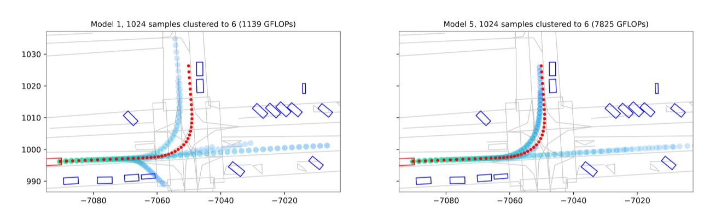
図中ラベル：Model 1, 1024 samples clustered to 6 (1139 GFLOPs)＝モデル 1、1024 サンプルを 6 本にクラスタリング（1139 GFLOPs）、Model 5, 1024 samples clustered to 6 (7825 GFLOPs)＝モデル 5、1024 サンプルを 6 本にクラスタリング（7825 GFLOPs）
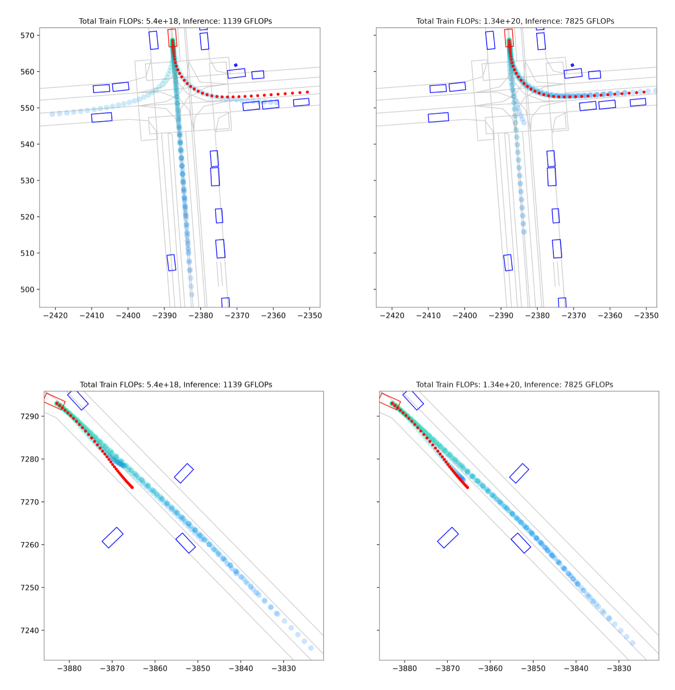
図中ラベル：Total Train FLOPs: 5.4e+18, Inference: 1139 GFLOPs＝総学習 FLOPs：5.4e+18、推論：1139 GFLOPs（右列は総学習 FLOPs：1.34e+20、推論：7825 GFLOPs）
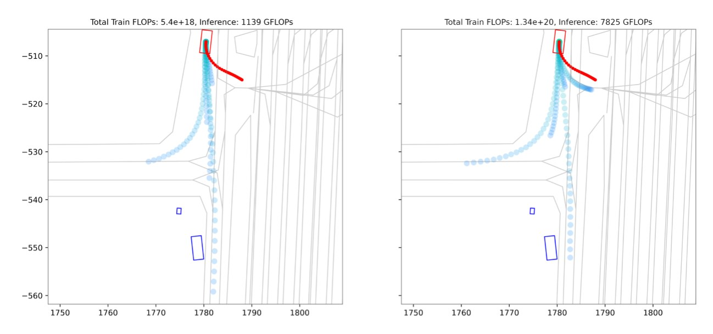
図中ラベル：左は総学習 FLOPs：5.4e+18、推論：1139 GFLOPs、右は総学習 FLOPs：1.34e+20、推論：7825 GFLOPs
D 推論スケーリングの可視化
以下の図は、推論時に引くサンプル数を 16 から 1024 まで変化させて、単一のモデルの予測を比較したものである。青／緑：予測軌跡、赤：正解軌跡。
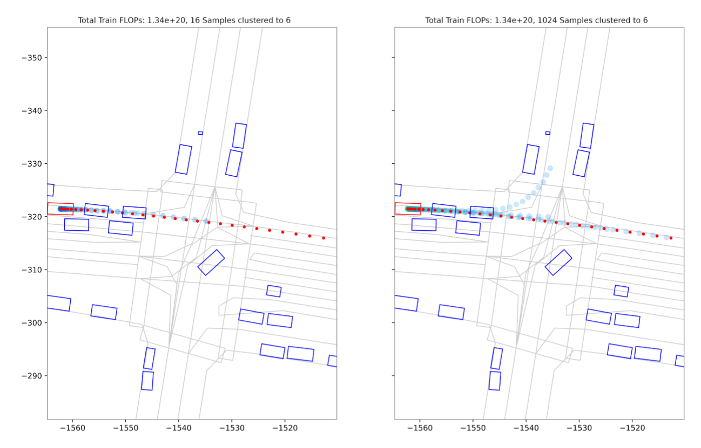
図中ラベル：Total Train FLOPs: 1.34e+20, 16 Samples clustered to 6＝総学習 FLOPs：1.34e+20、16 サンプルを 6 本にクラスタリング（右は 1024 サンプルを 6 本にクラスタリング）
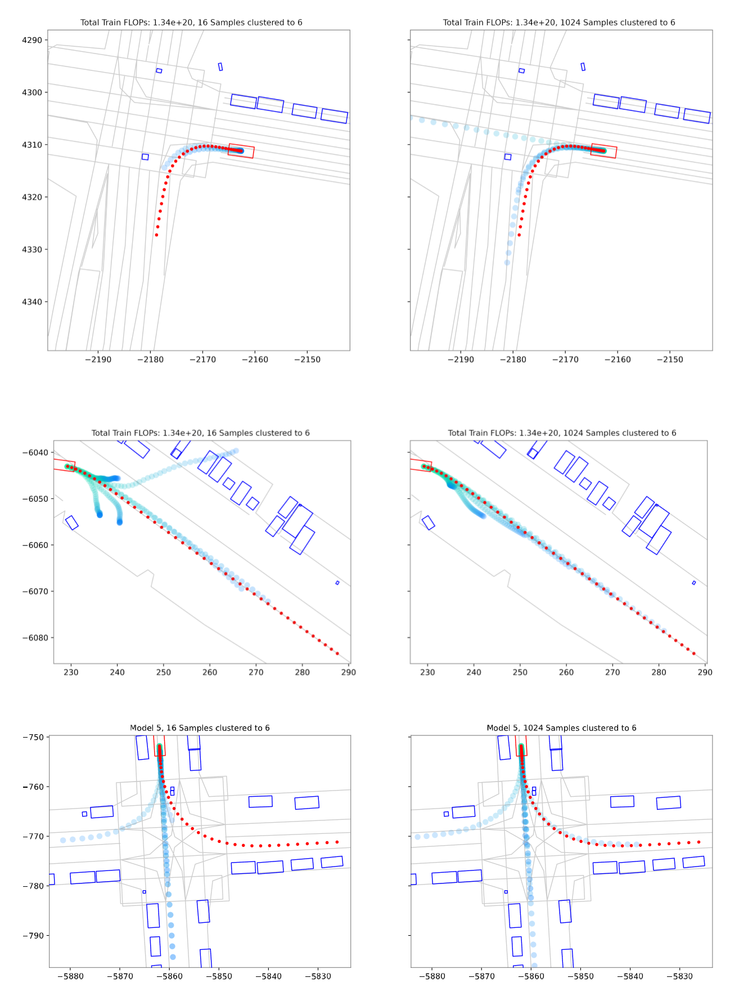
図中ラベル：Total Train FLOPs: 1.34e+20, 16 / 1024 Samples clustered to 6＝総学習 FLOPs：1.34e+20、16／1024 サンプルを 6 本にクラスタリング、Model 5, 16 / 1024 Samples clustered to 6＝モデル 5、16／1024 サンプルを 6 本にクラスタリング（各行の左が 16 サンプル、右が 1024 サンプル）